PA4
概述 - 虚实交错的魔法: 分时多任务
- task PA4.1: 实现基本的多道程序系统, 支持带参数的仙剑奇侠传与Hello内核线程的分时运行
- task PA4.2: 实现支持虚存管理的多道程序系统
- task PA4.3: 实现抢占式分时多任务系统, 并提交完整的实验报告
多道程序
目前的批处理系统：只能同时运行一个程序，只有当一个程序结束执行之后，才会开始执行下一个程序。
这也正是批处理系统的一个缺陷：如果当前程序正在等待输入输出，那么整个系统都会因此而停顿。
在真实的计算机中，和CPU的性能相比，输入输出是非常缓慢的：以磁盘为例，磁盘进行一次读写需要花费大约5毫秒的时间，但对于一个2GHz的CPU来说，它需要花费10,000,000个周期来等待磁盘操作的完成。
事实上，与其让系统陷入无意义的等待，还不如用这些时间来进行一些有意义的工作。
一个简单的想法就是, 在系统一开始的时候加载多个程序, 然后运行第一个; 当第一个程序需要等待输入输出的时候, 就切换到第二个程序来运行; 当第二个程序也需要等待的时候, 就继续切换到下一个程序来运行, 如此类推.
这就是多道程序的基本思想。Computer multitasking - Wikipedia
要实现一个多道程序操作系统, 我们只需要实现以下两点就可以了:
-
在内存中可以同时存在多个进程
让
loader把 不同的进程加载到不同的内存位置中，进程加载的本质就是一些内存拷贝操作。但是
loader怎么知道加到哪里？不同的进程占据不同的位置，还有可能会变，怎么做？ -
在满足某些条件的情况下, 可以让执行流在这些进程之间切换
切换栈。
-
==思考题==
我们只要让loader把不同的进程加载到不同的内存位置就可以了, 加载进程的过程本质上就是一些内存拷贝的操作, 因此并没有什么困难的地方.
其实我在骗你!
对我们目前实现的计算机系统来说, "把不同的进程加载到不同的内存位置"其实是一件很麻烦的事情, 你能想明白为什么吗? 如果想不明白也没关系, 我们会在下一阶段详细讨论这个问题.
loader作为操作系统的一部分，那不得记录不同的进程装载到程序的哪个位置了？不然要加载的新的进程的时候分配到的空闲区域实际上是别的进程的呢？怎么做？操作系统记录下来？再阅读 程序和内存的位置 -
==思考题==
为了简单起见, 我们可以在操作系统中直接定义一些测试函数来作为程序, 因为程序本质上就是一些有意义的指令序列, 目前我们不必在意这些指令序列到底从何而来. 不过, 一个需要注意的地方是栈, 我们需要为每个进程分配各自的栈空间.
为什么需要使用不同的栈空间?
如果不同的进程共享同一个栈空间, 会发生什么呢?
实际上每一个进程的栈就是每一个进程的核心，每一个进程产生或使用的不同的数据或多或少都要放在栈上，如果不同的进程共享同一个栈空间，那不同的进程就使用会用到不属于本进程的数据，又难以想象的错误。
上下文切换
个人推荐，如果此时已经对于
RTOS的内部机制有一些了解的话，可以结合起来看看。在PA3中, 我们已经提到了操作系统和用户进程之间的执行流切换, 并介绍了"上下文"的概念: 上下文的本质就是进程的状态.
换句话说, 我们现在需要考虑的是, 如何在多个用户进程之间进行上下文切换.
为了帮助大家理解这个问题, 我们在
am-kernels中为大家准备了一个约30行的操作系统yield-os, 它创建了两个执行流, 在CTE的支撑下交替输出A和B. 你可以在native上运行yield-os来查看它的行为.
也就是说，切换上下文，一定程度上也就代表着切换进程了。
Linus 曾经最开始做的 Linux 雏形的一个功能？！（推荐阅读Linus 的自传：《just for fun》）
基本原理
基于 CTE，假设两个进程A、B
- 假设进程 A 运行的过程中触发了系统调用，陷入到内核。
- 根据
__am_asm_trap()的代码，A 的上下文结构将会被保存到 A 的栈上。 - 系统调用处理完毕之后，
__am_asm_trap()会根据栈上保存的上下文结构来恢复 A 的上下文。 - 如果我们先不着急恢复 A 的上下文，而是先将栈顶指针切换到另一个进程 B 的栈上，由于 B 的栈上存放了之前 B 保存的上下文结构，接下来的操作就会根据这一结构来恢复 B 的上下文。
- 从
__am_asm_trap()返回之后，我们已经在运行进程 B 了。

那进程A到哪里去了呢? 别担心, 它只是被暂时"挂起"了而已. 在被挂起之前, 它已经把上下文结构保存到自己的栈上了, 如果将来的某一时刻栈顶指针被切换到A的栈上, 代码将会根据栈上的上下文结构来恢复A的上下文, A将得以唤醒并执行.
所以, ==不同进程的上下文切换其实就是不同进程之间的栈切换!==
进程控制块
由于每次栈保存的上下文架构的位置不固定，我们需要一个指针来记录上下文结构的位置： context pointer(cp)。当想要找到其他进程的上下文结构时，只要寻找这个进程的 cp 指针即可。
事实上，有不少信息都是进程相关的，除了刚才提到的上下文指针 cp 之外，上文提到的栈空间也是如此。
为了方便对这些进程相关的信息进行管理，操作系统使用一种叫进程控制块(PCB, process control block)的数据结构，为每一个进程维护一个PCB。
联想到
FreeRTOS的TCB结构体了。
yield-os 的 PCB 结构体：
#define STACK_SIZE (4096 * 8)
typedef union {
uint8_t stack[STACK_SIZE];
struct {
Context *cp;
};
} PCB;
注意这是个联合体 union，另外栈的大小：32KB。
在进行上下文切换的时候，只需要把PCB中的 cp 指针返回给CTE的 __am_irq_handle()函数即可，剩余部分的代码会根据上下文结构恢复上下文。
更具体一点说，对于每个进程的入栈保存的上下文结构（gpr、csr...），通过一个 PCB 结构体来管理，
还是有一个问题：对于刚刚加载完的进程，我们怎么切换到它来让它运行起来呢?
内核线程
-
创建内核线程上下文
很简单，既然上下文切换一定程度上代表了进程切换，那我们手动给这个进程一些上下文结构不就行了？
答案很简单, 我们只需要在进程的栈上人工创建一个上下文结构, 使得将来切换的时候可以根据这个结构来正确地恢复上下文即可.
上文提到，我们先把操作系统中直接定义的一些测试函数作为程序。
yield-os提供了一个测试函数f()，我们接下来的任务就是为它创建一个上下文，然后切换到它来执行。这样的执行流有一个专门的名称, 叫"内核线程"(kernel thread)。这里的意思也就是之前说的，需要有一个后台程序来管理前台程序。之前我们的程序是按照在
ramdisk中存放的顺序运行即可，现在是各个进程要进行切换，需要一个程序来协调，就是这个 内核线程了。上面的有点问题，还没到用户进程呢。
应该是我们现在做的就是创建两个内核线程，让他们互相运行。
-
==思考题==
为什么不叫"内核进程"?
这个问题其实等价于"进程和线程有什么区别", 是个不错的问题. 而且这还属于考研八股的内容呢, 于是你肯定可以通过STFW找到很多五花八门的答案, 比如"线程更加轻量级", "线程没有独立的资源"等等.
如果要进一步解释"什么是轻量级", "独立的资源是什么意思", 在PA中可能比较困难. 不过在PA中也不必深究这个问题, 目前你只需要把它们都看成执行流就可以了, 更重要的是, 这两者你都将会实现, 在代码中亲自去感受它们的区别不是一个更好的选择吗? 另外, 带着这个问题去修读下学期的操作系统课也不错.
可以发现，内核中所有正在执行的函数都共用一个虚拟地址空间——也就是内核地址空间，这是线程和进程最大的区别，因为每个进程都将会有自己的地址空间。这也是为什么会说线程更轻，因为构造虚拟地址空间需要时间开销。
这里再看看 PA4最后的讲义 体验虚拟化 - 窗口管理器NWM 这一部分。
创建内核线程的上下文是通过CTE提供的
kcontext()函数 (在abstract-machine/am/src/riscv/nemu/cte.c中定义)来实现的, 其中的"k"代表内核.kcontext()的原型是Context* kcontext(Area kstack, void (*entry)(void *), void *arg);其中
kstack是栈的范围，entry是内核线程的入口，arg则是内核线程的参数。此外,
kcontext()要求内核线程不能从entry返回, 否则其行为是未定义的.你需要在
kstack的底部创建一个以entry为入口的上下文结构(目前你可以先忽略arg参数), 然后返回这一结构的指针.yield-os会调用kcontext()来创建上下文, 并把返回的指针记录到PCB的cp中:| | +---------------+ <---- kstack.end | | | context | | | +---------------+ <--+ | | | | | | | | | | | | +---------------+ | | cp | ---+ +---------------+ <---- kstack.start | | -
-
线程/进程调度
上下文的创建和切换是CTE的工作，而具体切换到哪个上下文，则是由操作系统来决定的，这项任务叫做进程调度。
进程调度是由
schedule()函数来完成的，它用于返回将要调度的进程上下文。因此，我们需要一种方式来记录当前正在运行哪一个进程，这样我们才能在
schedule()中返回另一个进程的上下文，以实现多任务的效果。这一工作是通过current指针来实现的，它用于指向当前运行进程的PCB。这样, 我们就可以在
schedule()中通过current来决定接下来要调度哪一个进程了。不过在调度之前, 我们还需要把当前进程的上下文指针保存在PCB当中：static PCB pcb[2], pcb_boot, *current = &pcb_boot; static Context *schedule(Event ev, Context *prev) { // save the context pointer current->cp = prev; // switch between pcb[0] and pcb[1] current = (current == &pcb[0] ? &pcb[1] : &pcb[0]); // then return the new context return current->cp; }注意所选进程的上下文是通过
kcontext()创建的，在schedule()中才决定要切换到它，然后在CTE的__am_asm_trap()中才真正地恢复这一上下文（__am_irq_handle之后）。-
==阅读==
机制和策略解耦
这其实体现了系统设计中的一种重要原则: 机制和策略解耦. 机制解决的是"能不能做"的问题, 而策略解决的则是"怎么做好"的问题. 显然, 策略需要机制的支撑, 机制需要策略来发挥最大的效果.
解耦的好处就很明显了: 代码重用率高, 而且容易理解. 在Project-N中, 这一解耦几乎做到了极致: 机制和策略被分离到两个子项目中. 比如, "上下文切换"这一机制是在AM的CTE中实现的, 它让系统可以做到"执行流的切换"这件事; 而具体要切换到哪一个执行流, 则是在操作系统中实现的.
AM的另外一个好处是将底层硬件的行为抽象成系统级机制, AM上的应用(包括OS)只需要调用这些系统级机制, 并实现相应的策略即可. 当然目前
schedule()中的策略非常简单, 下学期的操作系统实验, 甚至是现实中更复杂的进程调度策略, 都可以在AM提供的同一个机制之上实现.
将栈顶指针切换到新进程的上下文结构：
mv sp, a0。在切换到进程 B 之前，进程 B 的上下文被保存了栈上。... mv a0, sp jal __am_irq_handle mv sp, a0 ...之前将
sp指针传给a0是因为这是RISC-V 的calling convention，使用a0作为传递函数参数的寄存器，而将sp赋给a0，相当于这个函数可以访问，本进程的栈的整个上下文架构。在调用__am_irq_handle后，其内部也已经调用了user_handler(schedule)将之前传进来的，原来指向本进程的上下文结构的指针，现在指向新的上下文结构（这个时候就已经在新的进程了，只是缺乏sp指向位置）；同时schedule也返回了新进程的上下文结构的位置，只不过这个时候的上下文结构体还是存在了a0寄存器中，那我们要做的就是将其拿出来，放到新进程的栈顶指针中。这样也就达到了将栈顶指针切换到新进程的上下文结构的效果。这里改动一些
ecall和ret,先做个保存#define MRET { s->dnpc = cpu.csr.mepc;} // ECALL word_t isa_raise_intr(word_t NO, vaddr_t epc) { cpu.csr.mepc = epc; cpu.csr.mcause = NO; /* cpu.csr.mstatus &= ~(1 << 7); // 把异常发生前的 MIE 字段 保存到 MPIE 字段 cpu.csr.mstatus |= ((cpu.csr.mstatus & (1 << 3)) << 4); // 保存处理器模式 MPP bit[9:8] 0b11 M mode cpu.csr.mstatus |= ((1 << 11) + (1 << 12)); // 关闭本地中断 MIE = 0 cpu.csr.mstatus &= ~(1 << 3); */ return cpu.csr.mtvec; } -
-
内核线程的参数
很简单，实际就是函数传参的内容。只需要根据函数调用的流程，让
kcontext按照调用约定，将参数arg放到正确的位置即可，主要是给f()用。用
a0
在真实的操作系统中, 内核中的很多后台任务, 守护服务和驱动程序都是以内核线程的形式存在的. 如果你执行
ps aux, 你就会看到系统中有很多COMMAND中带有中括号的内核线程(例如[kthreadd]). 而创建和执行它们的原理, 也是和上面的实验内容非常相似(当然具体实现肯定会有所不同).
OS 中的上下文切换
RT-Thread
RT-Thread中有两个抽象层, 一个是BSP(Board Support Package), 另一个是libcpu.
- BSP为各种型号的板卡定义了一套公共的API, 并基于这套API实现RT-Thread内核; 而对于一款板卡, 只需要实现相应的API, 就可以将RT-Thread内核运行在这款板卡上.
- libcpu则是为各种CPU架构定义了一套公共的API, RT-Thread内核也会调用其中的某些API.
这一思想和AM非常类似. 当然, BSP也不仅仅是针对真实的板卡, 也可以对应QEMU等模拟器, 毕竟RT-Thread内核无需关心底层是否是一个真实的板卡.
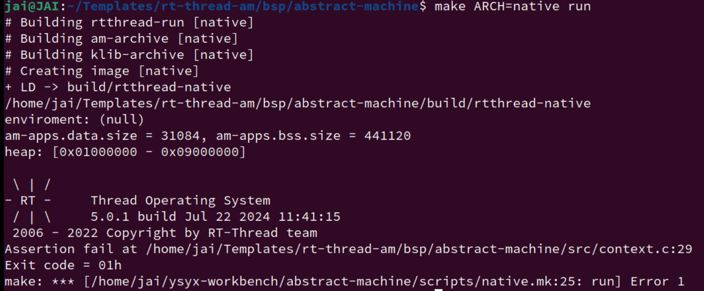
用AM的API来实现BSP的API, 具体见
rt-thread-am/bsp/abstract-machine/目录下的代码. 用到的AM API如下:
- 用TRM的heap实现RT-Thread中的堆
- 用TRM的
putch()实现RT-Thread中的串口输出功能- 暂不使用IOE
- 用CTE的
iset()实现RT-Thread中开/关中断功能- 通过CTE实现RT-Thread中上下文的创建和切换功能. 此部分代码并未实现, 我们将它作为选做作业.
对于 RT-Thread 的内容，我们先简单梳理一下层次，个人感觉讲义的这部分比较乱。
-
上下文创建
实现：
rt-thread-am/bsp/abstract-machine/src/context.c中的rt_hw_stack_init()函数：rt_uint8_t *rt_hw_stack_init(void *tentry, void *parameter, rt_uint8_t *stack_addr, void *texit);它的功能是以
stack_addr为栈底创建一个入口为tentry，参数为parameter的上下文，并返回这个上下文结构的指针。此外，若上下文对应的内核线程从
tentry返回，则调用texit，RT-Thread会保证代码不会从texit中返回。问题：
-
传入的
stack_addr可能没有任何对齐限制，最好将它对齐到sizeof(uintptr_t)再使用. -
CTE的
kcontext()要求不能从入口返回，因此需要一种新的方式来支持texit的功能。一种方式是构造一个包裹函数, 让包裹函数来调用
tentry，并在tentry返回后调用texit，然后将这个包裹函数作为kcontext()的真正入口，不过这还要求我们将tentry，parameter和texit这三个参数传给包裹函数，应该如何解决这个传参问题呢？ -
关于对齐，究竟是选择向上还是向下对齐？
- 向上对齐（Round Up）：
- 内存分配：当需要分配一块内存时，可能需要确保这块内存的起始地址是某个特定大小（如4字节、8字节等）的倍数。使用
ROUNDUP宏可以计算出向上取整的地址。 - 数据结构对齐：某些数据结构可能需要按照特定的对齐边界存储，以确保访问时的效率和符合硬件要求。
- 内存分配：当需要分配一块内存时，可能需要确保这块内存的起始地址是某个特定大小（如4字节、8字节等）的倍数。使用
- 向下对齐（Round Down）：
- 内存地址调整：如果一个内存地址不在所需的对齐边界上，可以使用
ROUNDDOWN宏将地址向下调整到最近的对齐边界。 - 缓存行对齐：在处理缓存行时，可能需要确保数据在缓存行的开始处，以避免缓存行冲突和提高缓存效率。
- 内存地址调整：如果一个内存地址不在所需的对齐边界上，可以使用
- 向上对齐（Round Up）：
-
-
上下文切换
实现
rt-thread-am/bsp/abstract-machine/src/context.c中的rt_hw_context_switch_to()、rt_hw_context_switch()函数:void rt_hw_context_switch_to(rt_ubase_t to); void rt_hw_context_switch(rt_ubase_t from, rt_ubase_t to);其中
rt_ubase_t类型其实是unsigned long，to和from都是指向上下文指针变量的指针(二级指针)。rt_hw_context_switch_to()用于切换到to指向的上下文指针变量所指向的上下文。rt_hw_context_switch()还需要额外将当前上下文的指针写入from指向的上下文指针变量中。
为了进行切换，我们可以通过
yield()触发一次自陷，在事件处理回调函数ev_handler()中识别出EVENT_YIELD事件后，再处理to和from.同样地, 我们需要思考如何将
to和from这两个参数传给ev_handler().在
rt-thread-am/bsp/abstract-machine/src/context.c中还有一个rt_hw_context_switch_interrupt()函数, 不过目前RT-Thread的运行过程不会调用它, 因此目前可以忽略它. -
参数问题
根据分析，上面两个功能的实现都需要处理一些特殊的参数传递问题。
-
对于上下文的切换，以
rt_hw_context_switch()为例，我们需要在rt_hw_context_switch()中调用yield(), 然后在ev_handler()中获得from和to。rt_hw_context_switch()和ev_handler()是两个不同的函数，但由于CTE机制的存在，使得rt_hw_context_switch()不能直接调用ev_handler()。因此，一种直接的方式就是借助全局变量来传递信息。危险的全局变量(1)
全局变量在整个系统中只有一个副本, 如果整个系统中只有一个线程, 这通常是安全的. 我们在C语言课上编写的程序都属于这种情况, 所以使用全局变量并不会造成明显的正确性问题. 但如果系统中存在多个线程, 并且它们使用同一个全局变量的时间段有重叠, 就可能会造成问题.
不过目前我们的硬件既未实现中断, 也不支持多处理器, 从编程模型来看和C语言课差不多, 因此使用全局变量解决这个问题还是可以的.
危险的全局变量(2)
如果使用全局变量来传递信息, 考虑以下场景, 可能会出现什么问题?
- 在多处理器系统中, 两个处理器同时调用
rt_hw_context_switch() - 一个线程调用
rt_hw_context_switch()后写入了全局变量, 但马上到来了时钟中断, 使得系统切换到另一个线程, 但这个线程也调用了rt_hw_context_switch()
危险的全局变量(4)
能否不使用全局变量来实现上下文的切换呢?
同样地, 我们需要寻找一种不会被多个线程共享的存储空间. 不过对于调用
rt_hw_context_switch()的线程来说, 它的栈正在被使用, 往其中写入数据可能会被覆盖, 甚至可能会覆盖已有数据, 使当前线程崩溃.to的栈虽然当前不使用, 也不会被其他线程共享, 但需要考虑如何让ev_handler()访问到to的栈, 这又回到了我们一开始想要解决的问题.除了栈之外, 还有没有其他不会被多个线程共享的存储空间呢? 嘿嘿, 其实前文也已经提到过它了, 那就是PCB! 因为每个线程对应一个PCB, 而一个线程不会被同时调度多次, 所以通过PCB来传递信息也是一个可行的方案. 要获取当前线程的PCB, 自然是用
current指针了.在RT-Thread中, 可以通过调用
rt_thread_self()返回当前线程的PCB. 阅读RT-Thread中PCB结构体的定义, 我们发现其中有一个成员user_data, 它用于存放线程的私有数据, 这意味着RT-Thread中调度相关的代码必定不会使用这个成员, 因此它很适合我们用来传递信息. 不过为了避免覆盖user_data中的已有数据, 我们可以先把它保存在一个临时变量中, 在下次切换回当前线程并从rt_hw_context_switch()返回之前再恢复它. 至于这个临时变量, 当然是使用局部变量了, 毕竟局部变量是在栈上分配的, 完美!对于上面两个版本都可以实现一下。
- 在多处理器系统中, 两个处理器同时调用
-
对于上下文创建，
对于上下文的创建，问题就更复杂了：调用
rt_hw_stack_init()和执行包裹函数的两个线程并不相同.危险的全局变量(3)
如果使用全局变量来传递信息, 而代码连续调用了两次
rt_hw_stack_init(), 会造成什么问题?因此, 我们需要寻找另一种解决方案. 回过头来看, 全局变量造成问题的原因是它会被多个线程共享, 为了得到正确的解决方案, 我们应该反其道而行之: 使用一种==不会被多个线程共享的存储空间==. 嘿嘿, 其实前文已经提到过它了, 那就是栈！
我们只需要让
rt_hw_stack_init()将包裹函数的三个参数放在上下文的栈中, 将来包裹函数执行的时候就可以从栈中取出这三个参数, 而且系统中的其他线程都不能访问它们.最后还需要考虑参数数量的问题,
kcontext()要求入口函数只能接受一个类型为void *的参数. 不过我们可以自行约定用何种类型来解析这个参数(整数, 字符, 字符串, 指针等皆可), 于是这就成了一个C语言的编程题了.这里就很像
abstract-machine/am/src/riscv/nemu/trap.S传递结构体指针给__am_irq_handle的内容，实现类似，就有种回到之前读FreeRTOS源码的感觉了，另外，这里面的C语言指针也玩的花起来了，需要再看看 二级指针 和 函数指针 的内容。
-
用到的 RT-Thread 手册
typedef struct rt_thread * rt_thread_t
线程类型指针定义
更多参考：RT-Thread API参考手册: RT-Thread 简介
RT-Thread系统启动过程，非常详细，通俗易懂！！！_rt，thread，启动流程-CSDN博客
RT-Thread源码学习第一篇，分析裸机程序的开始代码 - OSCHINA - 中文开源技术交流社区
Nanos-lite
这里直接照搬 yield-os
void init_proc() {
context_kload(&pcb[0], hello_fun, "123");
context_kload(&pcb[1], hello_fun, "456");
switch_boot_pcb();
Log("Initializing processes...");
// load program here
//naive_uload(NULL, "/bin/menu");
//naive_uload(NULL, "/bin/bmp-test");
}
void hello_fun(void *arg) {
int j = 1;
while (1) {
Log("Hello World from Nanos-lite with arg '%s' for the %dth time!", (const char *)arg, j);
j ++;
yield();
}
}
调用kcontext()来创建上下文, 并把返回的指针记录到PCB的cp中
void context_kload(PCB *pcb, void (*entry)(void *), void *arg) {
Area stack = {
.start = pcb->stack,
.end = pcb->stack + STACK_SIZE
};
pcb->cp = kcontext(stack, entry, arg);
}
riscv32-nemu 和 native 都成功运行：
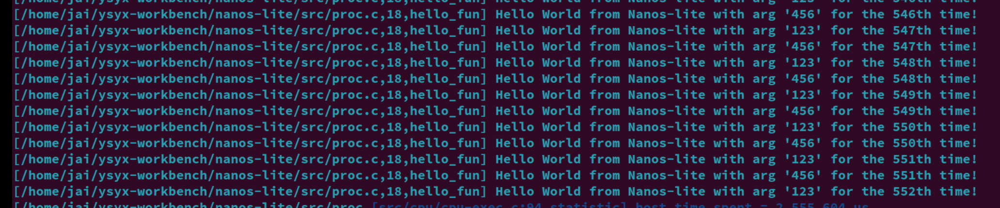
用户进程
创建用户进程上下文
PA3 的 naive_uload() 直接通过函数调用来转移到用户程序的代码，那时候用的还是内核栈，栈溢出就 G，会损坏操作系统的数据。
现在我们是在多道程序操作系统中，系统运行的进程就不止一个了，如果让用户进程继续使用内核区的栈，就会影响到其它进程的运行。
-
==阅读==
如果内核线程发生了栈溢出, 怎么办?
如果能检测出来, 最好的方法就是触发kernel panic, 因为这时候内核的数据已经不再可信, 如果将一个被破坏的数据写回磁盘, 将会造成无法恢复的毁灭性损坏.
好消息是, 内核线程的正确性可以由内核开发人员来保证, 这至少要比保证那些来路不明的用户进程的正确性要简单多了.
而坏消息则是, 大部分的内核bug都是第三方驱动程序导致的: 栈溢出算是少见的了, 更多的是use-after-free, double-free, 还有难以捉摸的并发bug. 而面对海量的第三方驱动程序, 内核开发人员也难以逐一保证其正确性. 如果你想到一个可以提升驱动程序代码质量的方法, 那就是为计算机系统领域作出贡献了.
Linux 驱动开发涉及到的内容？
因此，和内核线程不同，用户进程的代码，数据和堆栈都应位于用户区，而且需要保证用户进程能且只能访问自己的代码，数据和堆栈。
为了区别开来，我们把PCB中的栈称为内核栈，位于用户区的栈称为用户栈。
于是我们需要一个有别于 kcontext() 的方式来创建用户进程的上下文，为此 AM 额外准备了一个API ucontext() (在 ~/ysyx-workbench/abstract-machine/am/src/riscv/nemu/vme.c中定义)，原型：
Context* ucontext(AddrSpace *as, Area kstack, void *entry);
- 参数
as用于限制用户进程可以访问的内存，我们在下一阶段才会使用，目前可以忽略它。 kstack是内核栈, 用于分配上下文结构，entry则是用户进程的入口.
由于目前我们忽略了as参数, 所以ucontext()的实现和kcontext()几乎一样, 甚至比kcontext()更简单: 连参数都不需要传递.
ucontext 实现如下：
Context *ucontext(AddrSpace *as, Area kstack, void *entry) {
void *stack_end = kstack.end;
Context *base = (Context *) ((uint8_t *)stack_end - sizeof(Context));
// just pass the difftest
base->mstatus = 0x1800;
base->mepc = (uintptr_t)entry;
return base;
}
不过你还是需要思考, 对于用户进程来说, 它需要一个什么样的状态来开始执行呢?
程序是个
S = <R, M>的状态机寄存器可以表示为
R = {GPR, PC, SR}，其中SR为系统寄存器寄存器和内存都准备好了，用户进程开始，准备到什么程度？
上下文的本质就是进程的状态，那进程和上下文在切换进程这一角度，就是类似的，所以，这个问题也就变成了用户进程的上下文切换需要准备到什么程度？最简单的，内存空间。
每一个用户进程的各自的资源就是各进程的栈上面的内容，也就是栈得准备好。
另一个方面，
在我们的 NEMU 中，寄存器也就是一块内存，按之前的内容，也已经入栈。
事实上，用户栈的分配是ISA无关的，所以用户栈相关的部分就交给 Nanos-lite 来进行，ucontext() 无需处理。目前我们让 Nanos-lite 把 heap.end 作为用户进程的栈顶，然后把这个栈顶赋给用户进程的栈指针寄存器就可以了。
哎呀，栈指针寄存器可是ISA相关的，在Nanos-lite里面不方便处理。别着急, 还记得用户进程的那个 _start 吗? 在那里可以进行一些ISA相关的操作。于是 Nanos-lite和Navy作了一项约定：Nanos-lite 把栈顶位置设置到 GPRx 中，然后由 Navy 里面的 _start 来把栈顶位置真正设置到栈指针寄存器中。
Nanos-lite可以把上述工作封装到 context_uload() 函数中, 这样我们就可以加载用户进程了。如下：
void context_uload(PCB *pcb, const char *process_name) {
uintptr_t entry = naive_uload(pcb, process_name);
Area stack = {
.start = heap.end - STACK_SIZE,
.end = heap.end
};
Log("name: %s", process_name);
Log("entry: %d", entry);
Log("stack.start: %d, stack.end: %d", stack.start, stack.end);
pcb->cp = ucontext(&pcb->as, stack, (void *)entry);
pcb->cp->GPRx = (uintptr_t)heap.end;
}
一直忘了返回
ucontext的值，给 当前线程的cp记录该用户进程的上下文位置。目的在于找到要的调度的上下文的入口看来还是有点懵懵懂懂。
把其中一个 hello_fun() 内核线程替换成：用户进程仙剑奇侠传：
context_uload(&pcb[1], "/bin/pal");
然后我们还需要在 serial_write()、events_read() 和 fb_write() 的开头调用 yield()，来模拟设备访问缓慢的情况。添加之后，访问设备时就要进行上下文切换，从而实现多道程序系统的功能。
每次触发 YIELD 事件，在各个进程之间进行调度。
运行成功，还真是卡爆了，这个模拟设备访问缓慢是真的慢 (关了 difftest 和 trace 应该会变快很多）

但是在 Navy native 下一直黑屏，就和之前在 Navy native 上 运行 bmp-test 一样 （（
确实没有相关的API？
为什么呢？我用的是 自己实现的
NDL呀？再回看一下 Navy native 的运行时环境是什么？，直接由 Linux native 提供的，用的 Linux 原生平台的内容来验证自己的
NDL和miniSDL的实现有没有问题，目前看来是有的
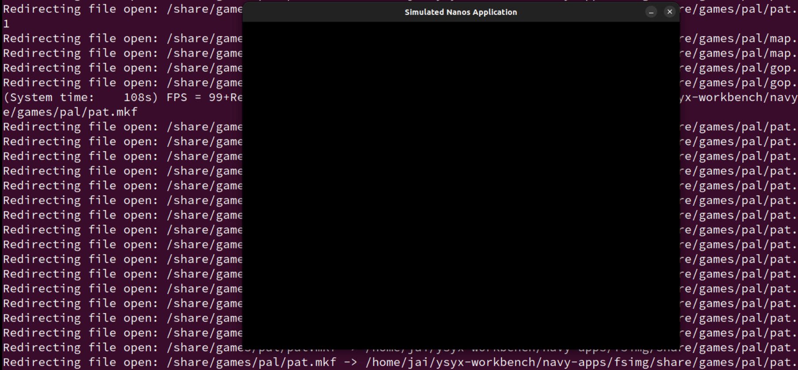
不对，突然傻了，讲义要求的是在 am-native nanos-lite 测测
把 GPRx 放到 rsp 中，搞定。
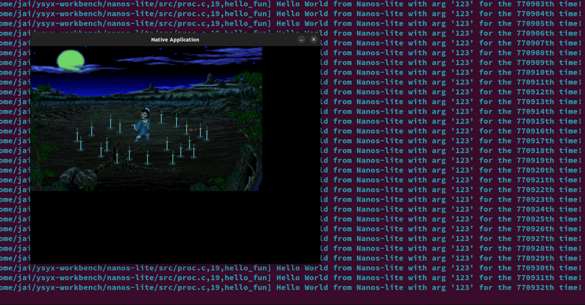
这是真的快多了哈哈哈。
-
==思考题==
一山不能藏二虎?
尝试把
hello_fun()换成Navy中的hello:-context_kload(&pcb[0], (void *)hello_fun, NULL); +context_uload(&pcb[0], "/bin/hello"); context_uload(&pcb[1], "/bin/pal");你发现了什么问题? 为什么会这样? 思考一下, 答案会在下一阶段揭晓!
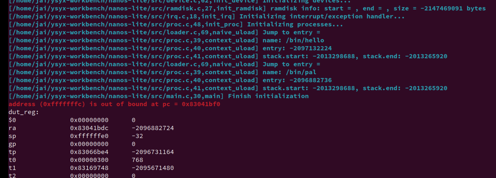
输出打印看看各个用户程序的栈位置（这个我还没有实现
printf更多的格式化字符，只能用%d%s先）转换一下：name: /bin/hello entry: 83004D40 stack.start: 87ff 8000, stack.end: 8800 0000 name: /bin/pal entry: 83041BD0 stack.start: 87ff 8000, stack.end: 8800 0000可以猜测应该是共用同一个用户栈的问题，每一个进程应该有各自的栈才对。或许是我上面实现的有问题？
应该不是，看讲义：目前我们把
heap.end作为用户进程的栈顶，也就是两个应用程序共同使用从这里开始的栈空间。下面再回看一些 AM 的代码:
... LDFLAGS += -T $(AM_HOME)/scripts/linker.ld \ --defsym=_pmem_start=0x80000000 --defsym=_entry_offset=0x0 ... //abstract-machine/scripts/platform/nemu.mk... _stack_top = ALIGN(0x1000); . = _stack_top + 0x8000; _stack_pointer = .; end = .; _end = .; _heap_start = ALIGN(0x1000); ... //abstract-machine/scripts/linker.ld... CONFIG_MSIZE=0x8000000 ... //nemu/include/config/auto.conf配合 AM 的内容和我们在 PA 开始的时候看到的，给 NEMU 划分的空间：
0x8000 0000 ~ 0x87ff ffff上面的用户栈栈顶刚好就是8800 0000（注意栈顶的栈底、栈的开始和结束 的区别）。我们上面实现的用户栈空间大小也就是
STACK_SIZE，恰好就是 32 KB 也就是 0x8000。#STACK_SIZE (8 * PGSIZE) #define PGSIZE 4096另外，既然是一个应用可以有多个进程，每个进程都有自己的栈空间？这一个应用之间的不同进程怎么通信？IPC机制？
但是具体共用了什么？用户进程的上下文，从
_start往后的函数栈帧等等内容？？等等，既然这些都是共享的，那应该用户进程的代码段应该也是共享的，也就是第二个用户进程会覆盖第一个用户进程的内容？
哦，需要用到虚拟地址？对内存进行管理？
两个进程分配同样的虚拟地址，但是物理地址是不一样的。
用户进程的参数
-
给用户进程传递参数
关于
argc/argv/envp的内容已经看过很多了，这里省略。当我们在终端键入
make ARCH=riscv32-nemu runARCH=riscv32-nemu和run这两个参数以及环境变量都是怎么传递给make程序的main()函数的呢?这个问题实际上在 PA2 的时候，无聊翻 make 的手册已经知道个大概了。
既然用户进程是操作系统来创建的，很自然参数和环境变量的传递就需要由操作系统来负责。
最适合存放参数和环境变量的地方就是用户栈了，因为在首次切换到用户进程的时候，用户栈上的内容就已经可以被用户进程访问。于是操作系统在加载用户进程的时候，还需要负责把
argc/argv/envp以及相应的字符串放在用户栈中，并把它们的存放方式和位置作为和用户进程的约定之一，这样用户进程在_start中就可以根据约定访问它们了。这项约定其实属于ABI的内容，ABI手册有一节 Process Initialization 的内容，里面详细约定了操作系统需要为用户进程的初始化提供哪些信息。不过 Project-N 系统里面只需要一个简化版的 Process Initialization 就够了： 操作系统将
argc/argv/envp及其相关内容放置到用户栈上，然后将GPRx设置为argc所在的地址。| | +---------------+ <---- ustack.end | Unspecified | +---------------+ | | <----------+ | string | <--------+ | | area | <------+ | | | | <----+ | | | | | <--+ | | | | +---------------+ | | | | | | Unspecified | | | | | | +---------------+ | | | | | | NULL | | | | | | +---------------+ | | | | | | ...... | | | | | | +---------------+ | | | | | | envp[1] | ---+ | | | | +---------------+ | | | | | envp[0] | -----+ | | | +---------------+ | | | | NULL | | | | +---------------+ | | | | argv[argc-1] | -------+ | | +---------------+ | | | ...... | | | +---------------+ | | | argv[1] | ---------+ | +---------------+ | | argv[0] | -----------+ +---------------+ | argc | +---------------+ <---- cp->GPRx | |上图把这些参数分成两部分, 一部分是字符串区域(string area)，另一部分是
argv/envp这两个字符串指针数组, 数组中的每一个元素是一个字符串指针, 而这些字符串指针都会指向字符串区域中的某个字符串. 此外, 上图中的Unspecified表示一段任意长度(也可为0)的间隔, 字符串区域中各个字符串的顺序也不作要求, 只要用户进程可以通过argv/envp访问到正确的字符串即可. 这些参数的放置格式与ABI手册中的描述非常类似, 你也可以参考ICS课本第七章的某个图。- 获取
envp、argv的元素个数，分配好指针数组的空间，分配好指针数组中存的字符串指针的空间（注意对齐）。 - 将字符串放到用户栈合适的地方。（参考 ABI手册的部分）
然后，根据这一约定，修改Navy中
_start的代码，把argc的地址作为参数传递给call_main()。然后修改call_main()的代码, 让它解析出真正的argc/argv/envp, 并调用main()。这样以后，用户进程就可以接收到属于它的参数了。-
==重要阅读==
阅读ABI手册, 理解计算机系统
事实上, ABI手册是ISA, OS, 编译器, 运行时环境, C语言和用户进程的桥梁, 非常值得大家去阅读.
ICS课本上那些让你摸不着头脑的约定, 大部分也是出自ABI手册. Linux上遵守的ABI是System V ABI, 它又分为两部分:
- 一部分是和处理器无关的generic ABI(gABI), 例如ELF格式, 动态连接, 文件系统结构等;
- 另一部分是和处理器相关的processor specific ABI(psABI), 例如调用约定, 操作系统接口, 程序加载等.
你至少也应该去看看ABI手册的目录, 翻一下正文部分的图, 这样你就会对ABI手册有一个大致的了解. 如果你愿意深入推敲一下"为什么这样约定", 那就是真正的"深入理解计算机系统了".
==本节遇到的各种问题==
大部分都是自己基础不行，自己给自己埋雷了...
-
strlen、strcpy的问题，为什么都要变成直接判断NULL呢？不能直接解引用判断是不是等于 空字符？更新，现在又变回之前的，判断空字符的版本了？bug...
-
call_main的问题void call_main(uintptr_t *args) { uintptr_t *base = args; int argc = *((int *)base); base++; char **argv = (char **)base; base += (argc + 1); char **envp = (char **)base; environ = envp; exit(main(argc, argv, envp)); assert(0); }为什么要用二级指针表示，直接用指针数组表示不行？
-
莫名其妙的bug：
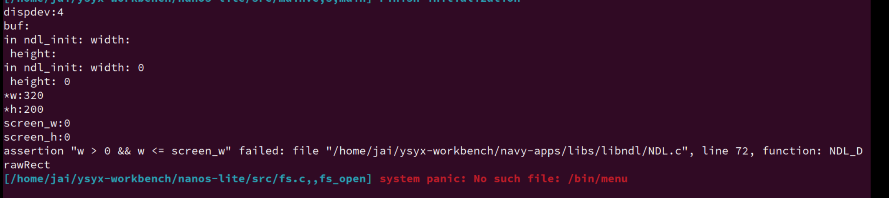
突然就读取不到 屏幕的大小了。
一步步溯源，
sprintf出问题了。懒得查了，在
github上找了一个佬的实现，刚好和自己之前的想法类似，做一个通用的输出函数，但后printf家族的各个函数调用它：我配合 GPT 抄了一个自己的版本。typedef void (*putter_t)(char ch, void *buf, size_t idx, size_t maxlen); static void putter_out_(char ch, void *buf, size_t idx, size_t maxlen) { (void)buf; (void)idx; (void)maxlen; if (ch) { putch(ch); } } static void putter_buf_(char ch, void *buf, size_t idx, size_t maxlen) { if (idx < maxlen) { ((char *)buf)[idx] = ch; } } static void reverse_(char *str, int length) { int start = 0; int end = length - 1; while (start < end) { str[start] ^= str[end]; str[end] ^= str[start]; str[start] ^= str[end]; end--; start++; } } static void put_literal_(putter_t put, void *buf, const char *str, size_t *p_idx, size_t maxlen) { while (*str != '\0') { put(*str, buf, *p_idx, maxlen); str++; (*p_idx)++; } } static void itoa_(putter_t put, char *buf, int num, int base, size_t *p_idx, size_t maxlen, int zpad_width) { bool is_neg = false; static char str[32] = {0}; size_t idx = 0; zpad_width = zpad_width <= 0 ? 1 : zpad_width; if (num < 0 && base == 10) { is_neg = true; num = -num; } while (num != 0) { int rem = num % base; str[idx++] = (rem > 9) ? (rem - 10) + 'a' : rem + '0'; num /= base; } while (idx < zpad_width - (is_neg ? 1 : 0)) { str[idx++] = '0'; } if (is_neg) { str[idx++] = '-'; } reverse_(str, idx); for (size_t i = 0; i < idx; i++) { put(str[i], buf, (*p_idx)++, maxlen); } } static void utoa_(putter_t put, char *buf, unsigned int num, int base, size_t *p_idx, size_t maxlen, int zpad_width) { static char str[32] = {0}; size_t idx = 0; zpad_width = zpad_width <= 0 ? 1 : zpad_width; while (num != 0) { unsigned int rem = num % base; str[idx++] = (rem > 9) ? (rem - 10) + 'a' : rem + '0'; num /= base; } while (idx < zpad_width) { str[idx++] = '0'; } reverse_(str, idx); for (size_t i = 0; i < idx; i++) { put(str[i], buf, (*p_idx)++, maxlen); } } static int vsnprintf_(putter_t put, char *buf, const size_t maxlen, const char *fmt, va_list ap) { size_t idx = 0; while (*fmt != '\0') { if (*fmt != '%') { put(*fmt, buf, idx++, maxlen); fmt++; continue; } fmt++; int zpad_width = 0; switch (*fmt) { case '0': zpad_width = atoi(++fmt); while (*fmt >= '0' && *fmt <= '9') { fmt++; } break; default: break; } switch (*fmt) { case 's': { char *p = va_arg(ap, char *); while (*p != '\0') { put(*(p++), buf, idx++, maxlen); }vb fmt++; break; } case 'd': { int x = va_arg(ap, int); itoa_(put, buf, x, 10, &idx, maxlen, zpad_width); fmt++; break; } case 'u': { unsigned int u = va_arg(ap, unsigned int); utoa_(put, buf, u, 10, &idx, maxlen, zpad_width); fmt++; break; } case 'x': { unsigned int u = va_arg(ap, unsigned int); utoa_(put, buf, u, 16, &idx, maxlen, zpad_width); fmt++; break; } case 'p': { uintptr_t u = va_arg(ap, uintptr_t); if (u == (uintptr_t)NULL) { put_literal_(put, buf, "(null)", &idx, maxlen); } else { put_literal_(put, buf, "0x", &idx, maxlen); utoa_(put, buf, u, 16, &idx, maxlen, zpad_width); } fmt++; break; } case 'c': { char ch = (char)va_arg(ap, int); put(ch, buf, idx++, maxlen); fmt++; break; } default: { put(*fmt, buf, idx++, maxlen); fmt++; break; } } } put(0, buf, idx < maxlen ? idx : maxlen - 1, maxlen); return (int)idx; } int vsnprintf(char *out, size_t n, const char *fmt, va_list ap) { return vsnprintf_(putter_buf_, out, n, fmt, ap); } int snprintf(char *out, size_t n, const char *fmt, ...) { va_list args; va_start(args, fmt); int result = vsnprintf(out, n, fmt, args); va_end(args); return result; } int vsprintf(char *out, const char *fmt, va_list ap) { return vsnprintf(out, (size_t)-1, fmt, ap); } int sprintf(char *out, const char *fmt, ...) { va_list args; va_start(args, fmt); int result = vsprintf(out, fmt, args); va_end(args); return result; } int printf(const char *fmt, ...) { va_list args; va_start(args, fmt); char buf[1]; int result = vsnprintf_(putter_out_, buf, (size_t)-1, fmt, args); va_end(args); return result; } int putchar(int ch) { putch((char)ch); return ch; } #endif -
二级指针
while (envp != NULL && envp[envpc] != NULL) envpc++; while (argv != NULL && argv[argc] != NULL) argc++;为什么条件只有
argv[argc] != NULL的时候不行？必须要先判断argv和envp？ -
关于用户栈和内核栈
在函数最开始那里，我们用的到底是内核栈还是用户栈？
内核栈！
这部分的内容作为指针的练习是真的不错，各种指针满天飞，强转NULL、二级指针，指针运算等等都有各种问题。还是回去看看资料复习
- 获取
-
让用户来决定用户进程的参数：实现带参数的execve()
我们需要把用户指定的参数告诉操作系统，让操作系统来把指定的参数放到新进程的用户栈里面。
具体通过系统调用
SYS_execveint execve(const char *filename, char *const argv[], char *const envp[]);-
==思考题==
为什么少了一个const?
在
main()函数中,argv和envp的类型是char * [], 而在execve()函数中, 它们的类型则是char *const []. 从这一差异来看,main()函数中argv和envp所指向的字符串是可写的, 你知道为什么会这样吗?
实现带参数的execve()
根据上述讲义内容, 实现带参数的
execve(). 有一些细节我们并没有完全给出, 例如调用context_uload()的pcb参数应该传入什么内容, 这个问题就交给你来思考吧!实现后, 运行以下程序:
- 测试程序
navy-apps/tests/exec-test, 它会以参数递增的方式不断地执行自身. 不过由于我们没有实现堆区内存的回收,exec-test在运行一段时间之后,new_page()就会把0x3000000/0x83000000附近的内存分配出去, 导致用户进程的代码段被覆盖. 目前我们无法修复这一问题, 你只需要看到exec-test可以正确运行一段时间即可. - MENU开机菜单.
- 完善NTerm的內建Shell, 使得它可以解析输入的参数, 并传递给启动的程序. 例如可以在NTerm中键入
pal --skip来运行仙剑奇侠传并跳过商标动画.
第三个 可以用
strtok。其他的见下文修 bug==bug 记录==
-
关于
exec-test以及自己context_uload实现的问题。调了一天的bug：运行
exec-test，用户main只能调用刚开始的那一次，也就是 从context_uload进用户函数的那一次，之后应用程序名莫名其妙的被吞了，没法不断地执行自身。发现问题如下：
void context_uload(PCB *pcb, const char *filename, char *const argv[], char *const envp[]) { ... uintptr_t *base = (uintptr_t *)ROUNDDOWN(new_user_stack - space_count, sizeof(uintptr_t)); uintptr_t *base_mem = base; ... char *string_area = (char *)base; uintptr_t *string_base = (uintptr_t*)base; char *tmp_argv[argc]; char *tmp_envp[envpc]; ... for (int i = 0; i < argc; i++) { //strcpy(string_area, argv[i]); strcpy((char *)string_area, (const char *)&argv[i]); //memcpy((void *)&tmp_argv[i], (const void *)&argv[i], sizeof(uintptr_t)); tmp_argv[i] = string_area; string_area += strlen((argv[i]) + 1); } for (int i = 0; i < envpc; i++) { //strcpy(string_area, envp[i]); strcpy((char *)string_area, (const char *)&envp[i]); //memcpy((void *)&tmp_envp[i], (const void *)&envp[i], sizeof(uintptr_t)); tmp_envp[i] = string_area; string_area += strlen((envp[i]) + 1); } ... base -= (argc + 1) + (envpc + 1); for (int i = 0; i < argc; i++, base++) { *base = (uintptr_t)tmp_argv[i]; } *base = (uintptr_t)NULL; // argv[argc] = NULL base++; for (int i = 0; i < envpc; i++, base++) { *base = (uintptr_t)tmp_envp[i]; } *base = (uintptr_t)NULL; // argv[envpc] = NULL base++; ... } //loader.c实际是这条
tmp_argv[i] = string_area;和之后的*base = (uintptr_t)tmp_argv[i];应该是直接拿传进来的argv赋值的。这个问题实际上还是自己玩不 6 指针，有关于指针赋值的问题。
tmp_argv[i] = string_area;这行代码将string_area的地址赋值给tmp_argv[i]。这意味着tmp_argv数组中的每个元素都指向string_area指向的地址，之后，同样的赋值操作*base = (uintptr_t)tmp_argv[i]，导致 传递应用程序参数的 用户栈上面的内容，也就是argc、envp也就是指针也就指向了string_area这那片区域。问题在于
string_area指向的是一个临时的、自动分配的栈内存，是一个指向栈上临时空间的指针。这个内存仅在context_uload函数的作用域内有效。当context_uload函数执行完毕后，这个栈内存可能会被其他函数调用重用，导致之前存储的指针失效，即出现所谓的“悬挂指针”（dangling pointer）。GPT：
- 栈内存分配： 在 C 语言中，局部变量通常存储在栈上。当一个函数被调用时，它的局部变量被分配在调用者的栈帧中。当函数返回时，这些局部变量的生命周期结束，它们占用的内存可以被重新使用。
- 悬挂指针： 如果函数返回后，返回值或输出参数包含了指向局部变量的指针，这些指针就变成了悬挂指针。它们指向的内存可能已经被其他数据覆盖，因此解引用这些指针将导致未定义行为。
- 指针的生命周期： 指针的生命周期应该与它所指向的数据的生命周期一致。如果数据的生命周期结束（例如，局部变量超出作用域），那么指针也应该停止使用。
为了避免悬挂指针问题，你应该使用具有适当生命周期和作用域的数据结构来存储字符串。以下是几种常见的方法：
- 动态分配的内存：
使用
malloc、calloc或realloc等函数从堆上分配内存。这样分配的内存在没有明确释放之前一直有效。
char *dynamic_string = malloc(strlen(some_string) + 1); if (dynamic_string != NULL) { strcpy(dynamic_string, some_string); // 使用 dynamic_string... free(dynamic_string); // 记得在使用完毕后释放内存 }- 静态或全局分配的内存：
静态分配的内存（例如，使用
static关键字声明的变量）和全局分配的内存在整个程序的生命周期内都是有效的。
static char global_string[100]; snprintf(global_string, sizeof(global_string), "%s", some_string); // 使用 global_string...- 栈分配的内存（谨慎使用）： 在某些情况下，如果你确定复制的字符串不会超出其生命周期，并且复制操作是在函数内部完成的，你可以使用栈分配的内存。但是，这要求你非常小心，确保不会返回指向局部变量的指针。
void func() { char stack_string[100]; snprintf(stack_string, sizeof(stack_string), "%s", some_string); // 使用 stack_string... // 注意：不要返回指向 stack_string 的指针 }- 使用标准库提供的容器：
如果你使用的是 C++，可以考虑使用
std::string或其他标准库容器，这些容器会自动管理内存。
#include <string> std::string my_string = some_string; // 使用 my_string...-
内存池： 对于需要频繁分配和释放内存的场景，可以使用内存池来分配内存。内存池预先分配一大块内存，并在其中管理小块内存的分配和释放。
-
复制到由其他函数或模块管理的内存： 如果有一个专门负责内存管理的模块或函数，你可以将字符串复制到那里分配的内存中，并确保该模块或函数在字符串使用完毕后正确释放内存。
选择哪种方法取决于你的具体需求和上下文。重要的是要确保你复制的字符串或数据的生命周期至少与使用它们的代码段一样长，并且要避免返回指向局部变量或临时数据结构的指针。
所以，应该使用函数参数
argv[i]赋值给tmp_argv[i]，或者memcpy。不过又暴露了一些问题，我将
string_area改成用堆、static的了，但是还是不行？那就应该看更初始的
base指针了，他也是临时变量。确实，本来base指针作为将用户参数放到用户栈上的辅助实现，放好了之后，base指针实际上也没有什么用了，也就回收了。所以，堆空间、数据节也就指向了一片栈空间了。一样会有问题。 -
运行
MENU和nterm的 问题-
但是现在到运行 MENU 和 NTerm 分别 启动 pal又有问题了，似乎名字又不见了？
有 bug：直接敲
/bin/pal会报错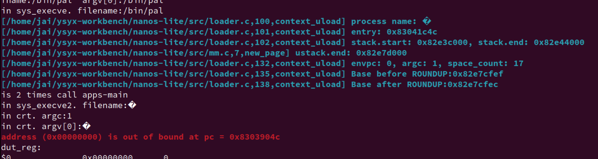
但是敲
/bin/pal --skip又是可以运行的，但是不能跳过商标动画？？？

哦，是之前直接在
palmain函数开始 写的跳过--skip那个时候是针对argv直接从context_uload传递的，现在是从 用户进程menu和nterm传递参数给新的用户进程。直接改。然后现在的问题是怎么传给它解析的参数，重新捋一遍用户进程的。
调不出来。。。找不到。。。
现在是直接没有了。。。。
在
loader中调用fs_read后，文件名直接没掉了？？？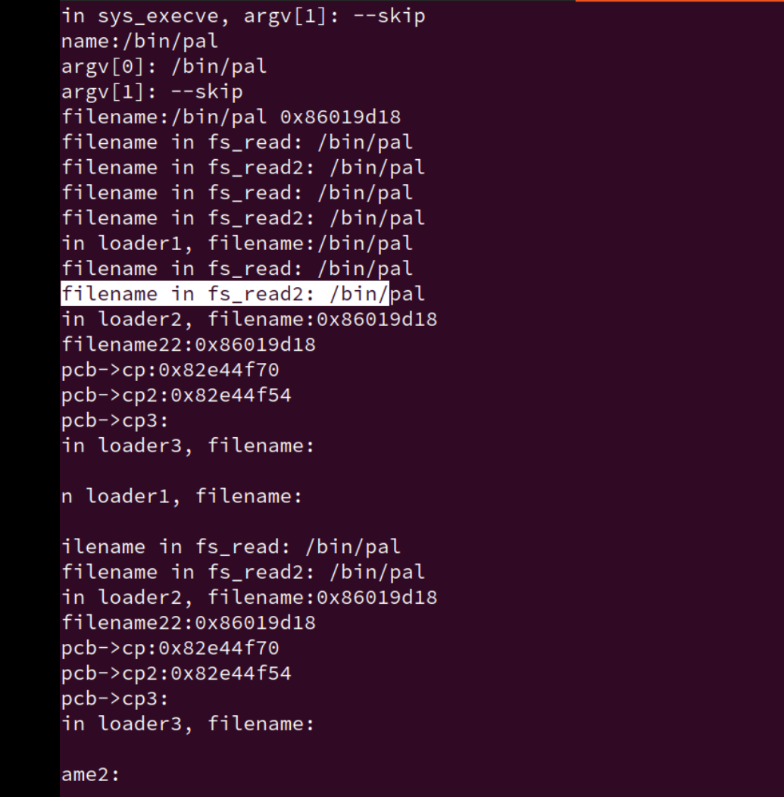
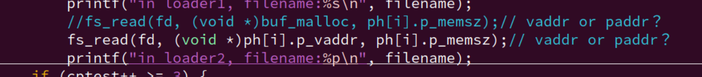
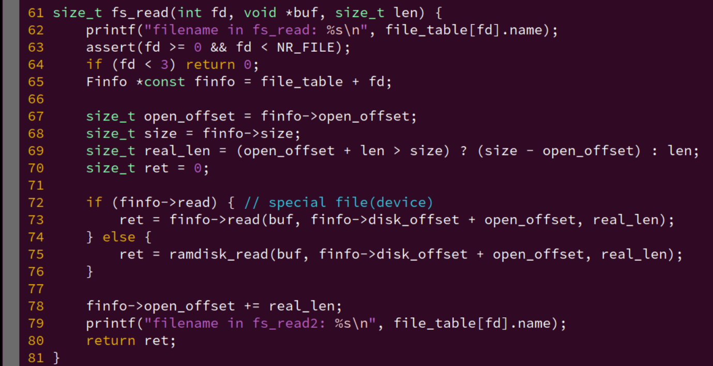
离谱啊
但是他又能找到 仙剑应用程序的入口？？？能正确找到

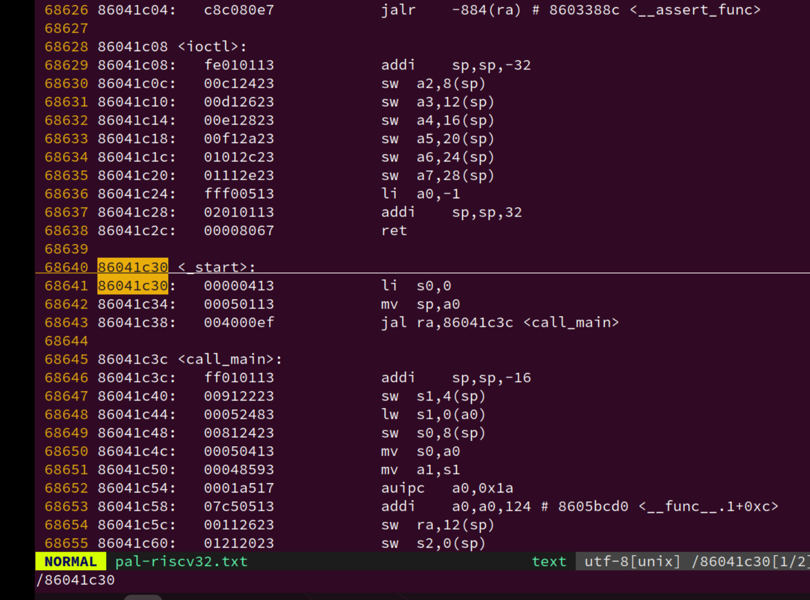
等下，还是没有进入仙剑的。
卡在了 计算 argv的长度
strlen的地方，而且argv的大小非常的大：166392 - 4 -4= 166388 ，再除以 4 = 41597，再减掉 1 个结尾，为 41596。为什么这么大？
再更新：能跑了，但是还是没解决这个
argc为什么这么大的原因。解决：
我在
new_page分配的新空间是指向高地址的，也就是在context_uload里操作的是栈底了。也就是我最后会出现 覆盖到代码段的情况。
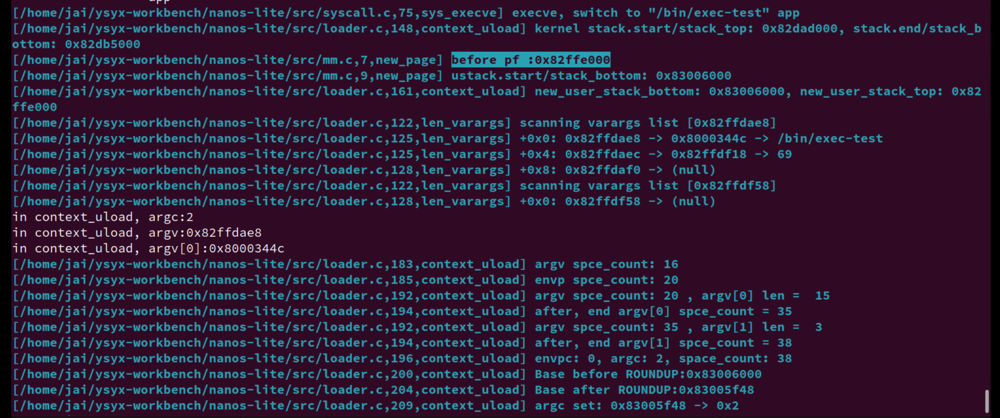
还是注意栈底栈顶、高低地址、stack_start/end 的区别，我觉得start、end这样子划分不太好，还是叫bottom。top好了。
一开始没起作用，发现是
ramdisk太大了，导致内核栈的内容都覆盖到用户空间的代码了。
几个小时再看。又有问题了，为什么用户栈又变成在 0x83000000之前了？？？
为什么参数
-
-
fs重写：
-
为什么要改用这个：用指针指向这片区域，用const只读。良好的编程习惯。
但是对于直接修改的地方，还是用他原来的变量好了。具体参考
fs_read, fs_write, fs_lseek的实现，用的是finfo指针 还是 直接用file_table -
注意临时变量、悬挂指针
-
注意指针的转化
void call_main(uintptr_t *args) { uintptr_t *base = args; //32位环境 int argc = *((int *)base); printf("base:%p\n", base); //base += sizeof(int); +16 = 4 * 4byte/每指针加1 base++ ; // +4 = 1 * 4vyte/每指针加1 printf("after base:%p\n", base); char **argv = (char **)base; base += (argc + 1); char **envp = (char **)base; environ = envp; exit(main(argc, argv, envp)); assert(0); }改成下面也可以：
void call_main(uintptr_t *args) { //uintptr_t *base = args; char *base = (char *)args; int argc = *((int *)base); printf("base:%p\n", base); base += sizeof(int); //base++ ; printf("after base:%p\n", base); char **argv = (char **)base; base += sizeof(char *) * (argc + 1); char **envp = (char **)base; environ = envp; exit(main(argc, argv, envp)); assert(0); }总结一句话，
intptr_t、uintptr_r变量类型用于跨平台的情况下，不同机器字长（16位、32位、64位）整数与指针相互转移的的通用性。对于上面的情况，我觉得应该用
char*来保证可移植性。个人总结：
数据类型 16位编译器 32位编译器 64位编译器 char 1字节 1字节 1字节 char* (指针变量) 2字节 4字节 8字节 short int 2字节 2字节 2字节 int 2字节 4字节 4字节 unsigned int 2字节 4字节 4字节 float 4字节 4字节 4字节 double 8字节 8字节 8字节 long 4字节 4字节 8字节 long long 8字节 8字节 8字节 unsigned long 4字节 4字节 8字节 uintptr_t 2字节 4字节 8字节 intptr_t 2字节 4字节 8字节 - char：始终为1字节。
- char/int * (指针变量)：其大小与平台的指针大小一致。
- short int：始终为2字节。
- int：在16位编译器中为2字节，在32位和64位编译器中为4字节。
- unsigned int：与
int的大小一致。 - float：始终为4字节。
- double：始终为8字节。
- long：在16位和32位编译器中为4字节，在64位编译器中为8字节。
- long long：始终为8字节。
- unsigned long：与
long的大小一致。 - uintptr_t 和 intptr_t：用于存储指针值的无符号和有符号整型，其大小与平台的指针大小一致。
-
base
| | +---------------+ <---- ustack.end | Unspecified | +---------------+ | | <----------+ | string | <--------+ | | area | <------+ | | | | <----+ | | | | | <--+ | | | | +---------------+ | | | | | | Unspecified | | | | | | +---------------+ | | | | | | NULL | | | | | | +---------------+ | | | | | | ...... | | | | | | +---------------+ | | | | | | envp[1] | ---+ | | | | +---------------+ | | | | | envp[0] | -----+ | | | +---------------+ | | | | NULL | | | | +---------------+ | | | | argv[argc-1] | -------+ | | +---------------+ | | | ...... | | | +---------------+ | | | argv[1] | ---------+ | +---------------+ | | argv[0] | -----------+ +---------------+ | argc | +---------------+ <---- cp->GPRx (刚开始我的base) | |
为什么strlen 传进去的参数，为指针数组，加一个 & 编译器就报错？
还有为什么现在用strlen就行了？之前用总是算出个1？？？太神奇了~计算机
运行 Busybox
Busybox 的 main() 函数会根据传入的参数来调用相应工具的功能：
main -> run_applet_and_exit
-
运行
Busybox(1)尝试通过NTerm运行Busybox中的一些简单命令, 比如
cat和printenv等. 如果你不清楚这些命令的用法, 可以通过man来查阅它们. 注意不要让这些命令的输出淹没在hello_fun()打印的信息中, 为此你可能需要调整hello_fun()打印信息的频率.已经麻了。
不过为了遍历 PATH 中的路径， execvp() 可能会尝试执行一个不存在的用户程序，例如/bin/wc。
因此Nanos-lite在处理SYS_execve 系统调用的时候就需要检查将要执行的程序是否存在，如果不存在，就需要返回一个错误码。
我们可以通过 fs_open() 来进行检查，如果需要打开的文件不存在，就返回一个错误的值，此时 SYS_execve 返回 -2。
另一方面, libos 中的 execve() 还需要检查系统调用的返回值：如果系统调用的返回值小于0，则通常表示系统调用失败，此时需要将系统调用返回值取负，作为失败原因设置到一个全局的外部变量 errno中，然后返回 -1。
-
==阅读==
-2和errno
errno是C标准定义的, 运行时环境中的一个全局变量, 用于存放最近一次失败的系统调用或库函数调用的错误码. 你可以通过运行errno -l命令(需要通过apt-get安装moreutils包) 来查看所有的错误码及其含义, 你应该能看到错误码2是你比较熟悉的一种错误. 关于errno全局变量的更多信息, 可以参考man 3 errno. -
execvpint execvp (const char *file, char * const argv[]) { char *path = getenv ("PATH"); char buf[MAXNAMLEN]; /* If $PATH doesn't exist, just pass FILE on unchanged. */ if (!path) return execv (file, argv); /* If FILE contains a directory, don't search $PATH. */ if (strchr (file, '/') ) return execv (file, argv); while (*path) { strccpy (buf, path, PATH_DELIM); /* An empty entry means the current directory. */ if (*buf != 0 && buf[strlen(buf) - 1] != '/') strcat (buf, "/"); strcat (buf, file); if (execv (buf, argv) == -1 && errno != ENOENT) return -1; while (*path && *path != PATH_DELIM) path++; if (*path == PATH_DELIM) path++; /* skip over delim */ } return -1; }查找并执行一个可执行文件。它首先在当前目录查找，如果找不到，再在环境变量
PATH指定的目录中查找。
现在的问题，如果通过用户进程来启动别的进程，就会出现文件名、argv 丢失乱码的情况。
为什么之前的 exec-test 只能跑 几十次，现在能跑几千次？？？
现在才是对的？因为刚好停在了接近 0x87ff ffff 的地方，确实是用户进程的代码段快爆了。
又不行了，一定是哪里出问题了。
summary、others
update的具体行为是什么：update: $(MAKE) -s -C $(NAVY_HOME) ISA=$(ISA) ramdisk @ln -sf $(NAVY_HOME)/build/ramdisk.img $(RAMDISK_FILE) @ln -sf $(NAVY_HOME)/build/ramdisk.h src/files.h @ln -sf $(NAVY_HOME)/libs/libos/src/syscall.h src/syscall.h去到
navy-apps根据指定的 ISA 编译，进行各种软链接。
程序和内存位置
绝对代码
可重定位代码
位置无关代码
-
==选做==
实现基于PIE的loader (建议二周目思考)
天下并没有免费的午餐, PIE之所以能做到位置无关, 其实是要依赖于程序中一个叫GOT(global offset table, 全局偏移量表)在新窗口中打开的数据结构. 要正确运行PIE, 加载器需要在加载程序的时候往GOT中填写正确的内容.
有兴趣的同学可以让Nanos-lite的loader支持PIE, 当然这需要了解一些ELF相关的细节, 具体细节可以参考ABI手册.
虚实交错的魔法
所谓虚拟内存, 就是在真正的内存(也叫物理内存)之上的一层专门给进程使用的抽象. 有了虚拟内存之后, 进程只需要认为自己运行在虚拟地址上就可以了, 真正运行的时候, 才把虚拟地址映射到物理地址. 这样, 我们只要把程序链接到一个固定的虚拟地址, 加载的时候把它们加载到不同的物理地址, 并维护好虚拟地址到物理地址的映射关系, 就可以一劳永逸地解决上述问题了!
那么, 在进程运行的时候, 谁来把虚拟地址映射成物理地址呢? 我们在PA1中已经了解到指令的生命周期:
while (1) {
从PC指示的存储器位置取出指令;
执行指令;
更新PC;
}
如果引入了虚拟内存机制, PC就是一个虚拟地址了, 我们需要在访问存储器之前完成虚拟地址到物理地址的映射. 尽管操作系统管理着计算机中的所有资源, 在计算机看来它也只是一个程序而已. 作为一个在计算机上执行的程序而言, 操作系统必定无法干涉指令执行的具体过程. 所以让操作系统来把虚拟地址映射成物理地址, 是不可能实现的. 因此, 在硬件中进行这一映射是唯一的选择了: 我们在处理器和存储器之间添加一个新的硬件模块MMU(Memory Management Unit, 内存管理单元), 它是虚拟内存机制的核心, 肩负起这一机制最重要的地址映射功能. 需要说明的是, 我们刚才提到的"MMU位于处理器和存储器之间"只是概念上的说法. 事实上, 虚拟内存机制在现代计算机中是如此重要, 以至于MMU在物理上都实现在处理器芯片内部了.
但是, 只有操作系统才知道具体要把虚拟地址映射到哪些物理地址上. 所以, 虚拟内存机制是一个软硬协同才能工作的机制
操作系统负责进行物理内存的管理, 加载进程的时候决定要把进程的虚拟地址映射到哪些物理地址; 等到进程真正运行之前, 还需要配置MMU, 把之前决定好的映射落实到硬件上, 进程运行的时候, MMU就会进行地址转换, 把进程的虚拟地址映射到操作系统希望的物理地址. 注意到这个映射是进程相关的: 不同的进程有不同的映射, 这意味着对不同的进程来说, 同一个虚拟地址可能会被映射到不同的物理地址. 这恰好一劳永逸地解决了内存覆盖的问题. 绝大部分多任务操作系统就是这样做的.
超越容量的界限
分页
-
==思考题==
虚存管理中PIC的好处
我们之前提到, PIC的其中一个好处是可以将代码加载到任意内存位置执行. 如果配合虚存管理, PIC还有什么新的好处呢? (Hint: 动态库已经在享受这些好处了)
分页过程的详细学习
-
==做1==
理解分页细节
- i386不是一个32位的处理器吗, 为什么表项中的基地址信息只有20位, 而不是32位?
- 手册上提到表项(包括CR3)中的基地址都是物理地址, 物理地址是必须的吗? 能否使用虚拟地址?
- 为什么不采用一级页表? 或者说采用一级页表会有什么缺点?
类比别的 ISA 的分页机制。 RTFM
-
==阅读==
iscv64需要实现三级页表
riscv32的Sv32机制只能对32位的虚拟地址进行地址转换, 但riscv64的虚拟地址最长是64位, 因此需要有另外的机制来支持更长的虚拟地址的地址转换. 在PA中, 如果你选择了riscv64, 那只需要实现Sv39三级页表的分页机制即可, 而且PA只会使用4KB小页面, 不会使用2MB的大页面, 因此你无需实现Sv39的大页面功能. 具体细节请RTFM.
-
==思考题==
空指针真的是"空"的吗?
程序设计课上老师告诉你, 当一个指针变量的值等于NULL时, 代表空, 不指向任何东西. 仔细想想, 真的是这样吗? 当程序对空指针解引用的时候, 计算机内部具体都做了些什么? 你对空指针的本质有什么新的认识?
一点五编程群里的讨论
空指针真的是"空"的吗?
不是，只是因为0在虚拟地址空间中没有映射/有较高的访问权限，所以在进行地址转换的时候会产生异常，异常处理程序则会杀死越权访问的进程（也就是产生了段错误）
解引用的时候：获得变量的值->访问0地址->mmu进行地址转换->在页表中找不到/没有对应权限->引发异常，进入异常处理程序->进程被杀死
空指针真的是空的吗
NULL 是一个标准规定的宏定义，用来表示空指针常量。在C中和早期的C++中它就是0
C++ 代码解读 复制代码#define NULL (void*)0后来C++有了
nullptr这个东西，不过与这个问题没啥关系。下面的部分引自博客园
程序在使用的是系统给定的一个段，程序中的零值指针指向这个段的开端，为了保证NULL概念，系统为我们这个段的开头64K内存做了苛刻的规定，根据虚拟内存访问权限控制，我们程序中（低访问权限）访问要求高访问权限的这64K内存被视作是不容许的，所以会必然引发Access Volitation 错误，而这高权限的64K内存是一块保留内存（即不能被程序动态内存分配器分配，不能被访问，也不能被使用），就是简单的保留，不作任何使用。
因此空指针不是真的"空"。但NULL确实是0地址，它在虚拟地址空间中没有映射/有较高的访问权限。所以访问空指针的内容会爆段错误。
作者：Lunaticskytql 链接：https://juejin.cn/post/7273025171111952444 来源：稀土掘金 著作权归作者所有。商业转载请联系作者获得授权，非商业转载请注明出处。
状态机视角下的虚存管理机制
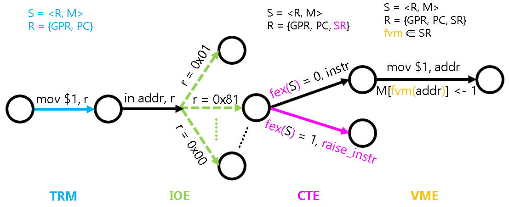
比较特殊的是fvm()这个函数. 回顾PA3介绍的状态机模型中引入的fex()函数, 它实际上并不属于状态机的一部分, 因为抛出异常的判断方式是和状态机的具体状态无关的.
而 fvm() 函数则有所不同，它可以看做是是状态机的一部分，这是因为 fvm() 函数是可以通过程序进行修改的：操作系统可以决定如何建立虚拟地址和物理地址之间的映射。
具体地, fvm() 函数可以认为是系统寄存器 SR 的一部分, 操作系统通过修改 SR 来对虚存进行管理.
TLB - 地址转换的加速
将虚存管理机制抽象成 VME
虚存机制的本质，就是个映射(或函数)。
也就是说，本质上虚存管理要做的事情，就是在维护这个映射。但这个映射应该是每个进程都各自维护一份，因此我们需要如下的两个API：
// 创建一个默认的地址空间
void protect(AddrSpace *as);
// 销毁指定的地址空间
void unprotect(AddrSpace *as);
AddrSpace ：
typedef struct AddrSpace {
int pgsize;
Area area;
void *ptr;
} AddrSpace;
pgsize用于指示页面的大小, area表示虚拟地址空间中用户态的范围, ptr是一个ISA相关的地址空间描述符指针, 用于指示具体的映射.
有了地址空间, 我们还需要有相应的API来维护它们. 于是很自然就有了如下的API:
void map(AddrSpace *as, void *va, void *pa, int prot);
它用于将地址空间as中虚拟地址va所在的虚拟页, 以prot的权限映射到pa所在的物理页. 当prot中的present位为0时, 表示让va的映射无效. 由于我们不打算实现保护机制, 因此权限prot暂不使用.
-
Sv32的页表结构page table entry（PTE）：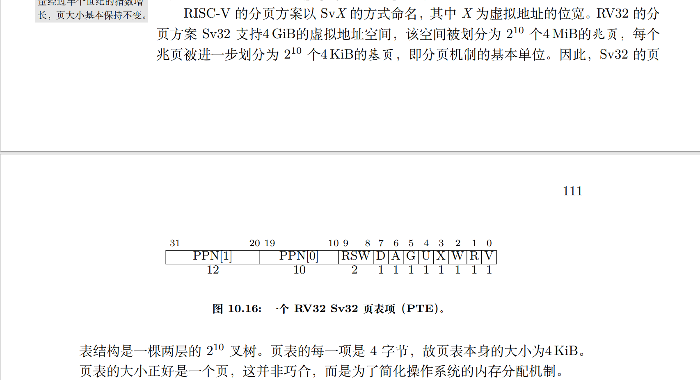

-
Sv32的两级树结构
- 根节点：代表整个4GiB的虚拟地址空间。
- 第一级节点：从根节点延伸出 2^10^=1024 个节点，每个节点代表一个 4 MiB 的区域。
- 第二级节点：每个第一级节点下挂载 2^10^=1024 个节点，每个节点代表一个 4KiB 的页面。
+---------+ | 4GiB | +----+----+ | +--------+ +--------+ 1024 +--------+ | 4MiB | | 4MiB | ...... | 4MiB | +--------+ +--------+ +--------+ | |.........|.........|................,,.............. | | | |(同) |----------|---------------------|... +--------+ +--------+ 1024 +--------+ | 4KiB | | 4KiB | ...... | 4KiB | +--------+ +--------+ +--------+
-
-
具体相关寄存器
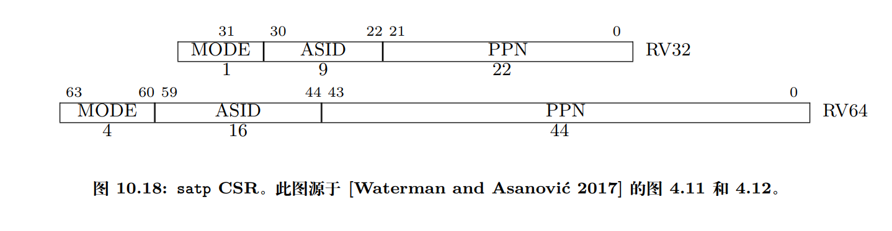
分页机制由一个名为
satp（Supervisor Address Translation and Protection，监管模式地址翻译和保护）的 S 模式 CSR 控制。如图 10.18 所示。satp有 3 个字段。- MODE 字段用于开启分页并选择页表级数，其编码如图 10.19 所示。
- ASID（Address Space Identifier，地址空间标识）字段是可选的，可用于降低上下文切换的开销。
- PPN 字段以4 KiB页为单位存放根页表的物理页号。
通常 M 模式软件在第一次进入 S 模式前会将
satp清零以关闭分页，然后 S 模式软件在创建页表后将正确设置satp寄存器。satp寄存器启用分页时，处理器将从根部遍历页表，将 S 模式和 U 模式的虚拟地址翻译为物理地址。 -
具体转换过程
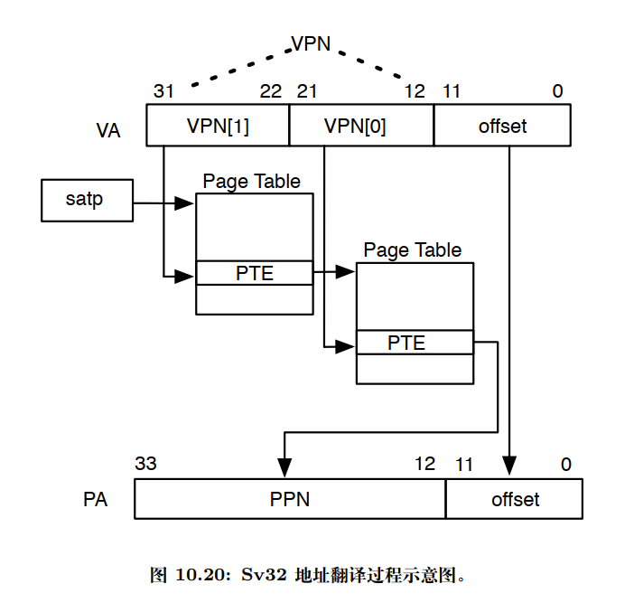
-
satp.PPN给出一级页表的基地址，VA[31:22]给出一级索引因此处理器将读取位于地址
(satp.PPN×4096 + VA[31:22]×4)的 PTE； -
由上得出的 PTE 包含二级页表的基地址，
VA[21:12]给出二级索引，因此处理器将读取位于地址
(PTE.PPN×4096 + VA[21:12]×4)的叶子 PTE；
-
实现的时候，再次注意逻辑与和位操作。
似乎很多地方都有这种写法：像
user_handler、vme_init、cte_init都是这种传进来一个函数指针的做法，设置相关的回调函数，这是什么做法呢？是不是一种固定的套路？
在分页机制上运行 Nanos-lite
梳理一些各个层次
-
os层
向下管理页表资源，向上抽象接口。
pa_allloc()、new_page() -
am层（
VME）主要功能 API 在于
map函数：它需要在虚拟地址空间as的页目录和页表中填写正确的内容，使得将来在分页模式下访问一个虚拟页(参数va)时，硬件（nemu）进行 page table walk 后得到的物理页，正是之前在调用map()时给出的目标物理页(参数pa)。再详细一点就是，
map要提取给出的va中的各个位，正确地放到以及一级页表（页目录）、二级页表中（这里只对于Sv32，别的分页方案比较类似，可以查阅相关资料）。这就是我们要做的。 -
硬件层（
nemu）实现分页机制核心功能：
- 判断CPU当前是否处于分页模式。
- 分页地址转换的具体过程。
// 检查当前系统状态下对内存区间为[vaddr, vaddr + len), 类型为type的访问是否需要经过地址转换. int isa_mmu_check(vaddr_t vaddr, int len, int type); // 对内存区间为[vaddr, vaddr + len), 类型为type的内存访问进行地址转换 paddr_t isa_mmu_translate(vaddr_t vaddr, int len, int type);详细的内容具体查看 讲义 和 spec。
核心思想：软硬件协同。map() 需要正确地填写页目录和页表中的内容，硬件 nemu page table work，分页地址转换才能取得正确的物理页。
-
一些问题
-
__riscv_xlen、__riscv等这些宏在哪里定义？am层？翻遍了很多地方都没找到。网上找了一下，实际上这是 RISCV GCC 工具链预定义的宏。
复习一下 PA2 的内容，找到 riscv工具链的相关架构定义：
ARCH_H := arch/$(ARCH).h CFLAGS += -O2 -MMD -Wall -Werror $(INCFLAGS) \ -D__ISA__=\"$(ISA)\" -D__ISA_$(shell echo $(ISA) | tr a-z A-Z)__ \ -D__ARCH__=$(ARCH) -D__ARCH_$(shell echo $(ARCH) | tr a-z A-Z | tr - _) \ -__PLATFORM__=$(PLATFORM) -D__PLATFORM_$(shell echo $(PLATFORM) | tr a-z A-Z | tr - _) \ -DARCH_H=\"$(ARCH_H)\" \ -fno-asynchronous-unwind-tables -fno-builtin -fno-stack-protector \ -Wno-main -U_FORTIFY_SOURCE -fvisibility=hidden // abstract-machine/MakefileCROSS_COMPILE := riscv64-linux-gnu- COMMON_CFLAGS := -fno-pic -march=rv64g -mcmodel=medany -mstrict-align CFLAGS += $(COMMON_CFLAGS) -static ASFLAGS += $(COMMON_CFLAGS) -O0 LDFLAGS += -melf64lriscv # overwrite ARCH_H defined in $(AM_HOME)/Makefile ARCH_H := arch/riscv.h // abstract-machine/scripts/isa/riscv.mkinclude $(AM_HOME)/scripts/isa/riscv.mk include $(AM_HOME)/scripts/platform/nemu.mk CFLAGS += -DISA_H=\"riscv/riscv.h\" COMMON_CFLAGS += -march=rv32im_zicsr -mabi=ilp32 # overwrite LDFLAGS += -melf32lriscv # overwrite AM_SRCS += riscv/nemu/start.S \ riscv/nemu/cte.c \ riscv/nemu/trap.S \ riscv/nemu/vme.c //abstract-machine/scripts/riscv32-nemu.mk这里再进一步看看具体的编译命令：
mkdir -p /home/jai/ysyx-workbench/abstract-machine/am/build/riscv32-nemu/src/riscv/nemu/ && echo + CC src/riscv/nemu/vme.c riscv64-linux-gnu-gcc -std=gnu11 -O2 -MMD -Wall -Werror -I/home/jai/ysyx-workbench/abstract-machine/am/src -I/home/jai/ysyx-workbench/abstract-machine/am/include -I/home/jai/ysyx-workbench/abstract-machine/am/include/ -I/home/jai/ysyx-workbench/abstract-machine/klib/include/ -D__ISA__=\"riscv32\" -D__ISA_RISCV32__ -D__ARCH__=riscv32-nemu -D__ARCH_RISCV32_NEMU -D__PLATFORM__=nemu -D__PLATFORM_NEMU -DARCH_H=\"arch/riscv.h\" -fno-asynchronous-unwind-tables -fno-builtin -fno-stack-protector -Wno-main -U_FORTIFY_SOURCE -fvisibility=hidden -fno-pic -march=rv64g -mcmodel=medany -mstrict-align -march=rv32im_zicsr -mabi=ilp32 -static -fdata-sections -ffunction-sections -DMAINARGS=\"\" -I/home/jai/ysyx-workbench/abstract-machine/am/src/platform/nemu/include -DISA_H=\"riscv/riscv.h\" -c -o /home/jai/ysyx-workbench/abstract-machine/am/build/riscv32-nemu/src/riscv/nemu/vme.o /home/jai/ysyx-workbench/abstract-machine/am/src/riscv/nemu/vme.c主要在于这两个：
-march=rv32im_zicsr指定了目标架构为RISC-V 32位，包含整数指令集（I）、可选的标准扩展（M）和Zicsr（控制和状态寄存器）。-mabi=ilp32指定了应用二进制接口为ILP32，这是一种32位的ABI，其中int、long和指针都是32位宽。
这两者具体有什么区别，这里我们暂时不管，我们现在知道，这是riscv32架构的。
在编译器中，
-m参数通常用来指定目标机器的架构或者特定的架构特性。不同的编译器可能支持不同的-m参数选项，但它们大多数遵循相似的模式。以下是一些常见的-m参数及其含义：-
-m32或-m64：这些参数指定生成32位或64位代码。在某些编译器中，它们用来告诉编译器生成适用于32位或64位操作系统的二进制文件。 -
-march=<architecture>：这个参数用来指定目标架构。例如，在GCC中，-march=native可以告诉编译器优化代码以适应当前编译机器的架构。 -
-mtune=<architecture>：与-march类似，但这个参数用来优化代码以适应特定的目标架构，而不是当前编译机器的架构。 -
-mabi=<ABI>：ABI代表应用二进制接口（Application Binary Interface），这个参数用来指定编译器应该遵循的ABI。不同的ABI定义了数据类型的大小、对齐方式、函数调用约定等。 -
-msoft-float或-mhard-float：这些参数用来指定浮点数的实现方式。-msoft-float表示使用软件库来实现浮点数运算，而-mhard-float表示使用硬件浮点单元。 -
-mno-<feature>：这个参数用来禁用特定的架构特性。例如，-mno-sse可以告诉编译器不要使用SSE指令集。 -
-mgeneral-regs-only：这个参数在某些编译器中用来指定代码只能使用通用寄存器，不能使用特殊的寄存器。 -
-mthumb或-marm：在ARM架构中，这些参数用来指定生成Thumb模式或ARM模式的代码。 -
-mlittle-endian或-mbig-endian：这些参数用来指定生成小端或大端字节序的代码。
这些只是一些例子，具体的
-m参数选项和它们的含义可能会根据编译器的不同而有所变化。在使用时，应该查阅相应编译器的文档来获取准确的信息。-
首先创建一个空文件：
vim empty.h -
然后使用 GCC -E 选项对 该文件进行预处理，
-dM选项让编译器打印出所有的预定义宏。。gcc -E -dM -
使用一款工具链，gnu的，各个厂家的都行，主要是看看效果，这里就按上面的：
riscv64-linux-gnu-gcc这里的64位工具链默认兼容32位，其他厂家的不一定？（进一步看看手册）
-
如图

确实有想要的，这个时候再回去看
trap.S的相关代码就很清晰了。另外，通过这种类似的方法，也可以查看编译器相关对
riscv的配置了。以后我们再遇到一些陌生的宏定义，在找遍所有源代码都没发现其在哪里被定义过，就可以想想这些宏定义是不是系统编译器自己定义的。额外看看开发者们的讨论：关于gcc预定义宏 · Issue #46 · loongson/LoongArch-Documentation (github.com)
-
-ffreestanding：允许编译器在没有标准C库支持的情况下编译代码。
-
native、riscv32-nemu 都运行成功：
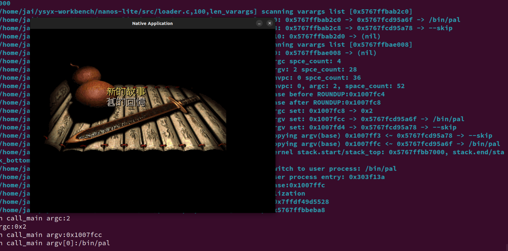
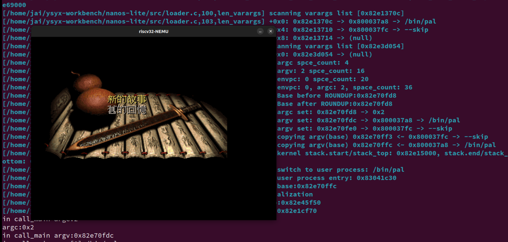
在分页机制上运行用户进程
-
程序装载
-
首先, 编译Navy应用程序的时候需要为
make添加VME=1的参数, 这样就可以将应用程序的链接地址改为0x40000000, 这是为了避免用户进程的虚拟地址空间与内核相互重叠, 从而产生非预期的错误.记得
make update VME=1这时, "虚拟地址作为物理地址的抽象"这一好处已经体现出来了: 原则上用户进程可以运行在任意的虚拟地址, 不受物理内存容量的限制. 我们让用户进程的代码从
0x40000000附近开始, 这个地址已经不在物理内存的地址空间中(NEMU提供的物理内存是128MB), 但分页机制保证了进程能够正确运行.这样, 链接器和程序都不需要关心程序运行时刻具体使用哪一段物理地址, 它们只要使用虚拟地址就可以了, 而虚拟地址和物理地址之间的映射则全部交给操作系统的MM来管理.
-
此外, 我们还需要对创建用户进程的过程进行较多的改动.
我们首先需要在加载用户进程之前为其创建地址空间. 由于地址空间是进程相关的, 我们将
AddrSpace结构体作为PCB的一部分. 这样以后, 我们只需要在context_uload()的开头调用protect(), 就可以实现地址空间的创建.目前这个地址空间除了内核映射之外就没有其它内容了, 具体可以参考
abstract-machine/am/src/$ISA/nemu/vme.c. -
不过, 此时
loader()不能直接把用户进程加载到内存位置0x40000000附近了, 因为这个地址并不在内核的虚拟地址空间中, 内核不能直接访问它.loader()要做的事情是, 获取程序的大小之后, 以页为单位进行加载:- 申请一页空闲的物理页
- 通过
map()把这一物理页映射到用户进程的虚拟地址空间中. 由于AM native实现了权限检查, 为了让程序可以在AM native上正确运行, 你调用map()的时候需要将prot设置成可读可写可执行 - 从文件中读入一页的内容到这一物理页中
这一切都是为了让用户进程在将来可以正确地运行: 用户进程在将来使用虚拟地址访问内存, 在loader为用户进程维护的映射下, 虚拟地址被转换成物理地址, 通过这一物理地址访问到的物理内存, 恰好就是用户进程想要访问的数据.
-
-
用户栈
-
和
loader()类似, 我们需要把new_page()申请得到的物理页通过map()映射到用户进程的虚拟地址空间中.我们把用户栈的虚拟地址安排在用户进程虚拟地址空间的末尾, 你可以通过
as.area.end来得到末尾的位置, 然后把用户栈的物理页映射到[as.area.end - 32KB, as.area.end)这段虚拟地址空间. -
最后, 为了让这一地址空间生效, 我们还需要将它落实到MMU中. 具体地, 我们希望在CTE恢复进程上下文的时候来切换地址空间. 为此, 我们需要将进程的地址空间描述符指针
as->ptr加入到上下文中, 框架代码已经实现了这一功能(见abstract-machine/am/include/arch/$ISA-nemu.h), 在x86中这一成员为cr3, 而在mips32/riscv32中则为pdir.怎么理解地址空间这个东西？
再：
- 修改
ucontext()的实现, 在创建的用户进程上下文中设置地址空间描述符指针 - 在
__am_irq_handle()的开头调用__am_get_cur_as()(在abstract-machine/am/src/$ISA/nemu/vme.c中定义), 来将当前的地址空间描述符指针保存到上下文中 - 在
__am_irq_handle()返回前调用__am_switch()(在abstract-machine/am/src/$ISA/nemu/vme.c中定义)来切换地址空间, 将被调度进程的地址空间落实到MMU中
- 修改
-
还有一个问题，我要区分代码段和数据段是否在同一个页面吗？ ==留坑==
-
==选做题==
让DiffTest支持分页机制(2)
如果你选择的是riscv32, 为了让
DiffTest机制正确地支持用户进程的运行, 你还需要:- 实现
M和U两种特权级模式, 具体地- 在NEMU中实现
mstatus.MPP位的功能 - 执行
ecall指令时, 根据当前特权级抛出不同号码的异常, 但在CTE中对它们进行统一的处理 - 创建内核线程上下文时, 额外将
mstatus.MPP设置为M模式 - 创建用户进程上下文时, 额外将
mstatus.MPP设置为U模式
- 在NEMU中实现
- 填写页表时, 需要额外设置
R,W,X,U,A,D位 - 创建用户进程上下文时, 为
mstatus额外设置MXR和SUM位
==留坑==
- 实现
-
==思考题==
内核映射的作用
对于x86和riscv32, 在
protect()中创建地址空间的时候, 有一处代码用于拷贝内核映射:// map kernel space memcpy(updir, kas.ptr, PGSIZE);尝试注释这处代码, 重新编译并运行, 你会看到发生了错误. 请解释为什么会发生这个错误.

页目录项失效。
实际上，每一个用户进程都包含了内核部分的地址映射。类比每个 PCB 在内核栈都存着 用户进程的
cp指针。如果不进行拷贝的话，那之后用户程序请求系统调用访问内核资源时，访问的就是用户空间的地址了（本应该映射到内核空间的地址）而在trap的时候我们又没有进行地址空间的转换（即页表项没转换），自然就是有问题了。
想想如果在
trap.S里做这个转换，会编写这个应该很恶心，开销应该也很大。 -
bug
实现的时候有点搞错了
brk的参数，直接传了要增长的字节数，应该是增长到哪个地址program_break + increment，bug从 PA3 到现在才发现。。。 -
==选做题==
native的VME实现
尝试阅读
native的VME实现, 你发现native是如何实现VME的? 为什么可以这样做? -
==思考题==
可以在用户栈里面创建用户进程上下文吗?
ucontext()的行为是在内核栈kstack中创建用户进程上下文. 我们是否可以对ucontext()的行为进行修改, 让它在用户栈上创建用户进程上下文? 为什么?若要在用户栈里面创建，要考虑上下文的位置，栈顶存放了用户进程的参数，上下文若紧接着存放，可能会被覆写……
无论怎么放，要是有一天栈满了，上下文也就覆写丢了，进程就找不到了，也就是挂了。
支持虚存管理的多道程序
不过我们会发现, 和之前相比, 在分页机制上运行的仙剑奇侠传的性能有了明显的下降. 尽管NEMU在串行模拟MMU的功能, 并不能完全代表硬件MMU的真实运行情况, 但这也说明了虚存机制确实会带来额外的运行时开销. 由于这个原因, 60年代的工程师普遍对虚存机制有所顾虑, 不敢轻易在系统中实现虚存机制. 但"不必修改程序即可让多个程序并发运行"的好处越来越明显, 以至于虚存机制成为了现代计算机系统的标配.
这里在嵌入式设备中，所以我们常常不会用到这个虚存管理？
-
==思考题==
并发执行多个用户进程
让Nanos-lite加载仙剑奇侠传和hello这两个用户进程; 或者是加载 NTerm 和hello内核线程, 然后从NTerm启动仙剑奇侠传, 你应该会在运行的时候观察到错误. 尝试分析这一错误的原因, 并总结为了支持这一功能, 我们需要满足什么样的条件.
这可以说是一周目最难的一道思考题了, 虽然我们会在PA4的最后给出分析, 喜欢挑战的同学仍然可以在这里尝试独立思考: 如果你能独立解决这个问题, 说明你对计算机系统的理解可以说是相当了得了.
Hint: 程序是个状态机.
分时多任务
如果要用于交互式场景，系统就要以一定的频率在所有进程之间来回切换，保证每个进程都能及时得到响应，这就是分时多任务。从触发上下文切换的角度看，分时多任务可以分成两类：
-
它的工作方式基于一个约定: 用户进程周期性地主动让出CPU的控制权, 从而让其它进程得到运行的机会. 这件事需要操作系统提供一个特殊的系统调用, 那就是我们在PA3中实现的
SYS_yield. 在PA3中看似没什么用的SYS_yield, 其实是协同多任务操作系统中上下文切换的基石. -
它基于硬件中断(通常是时钟中断)强行进行上下文切换, 让系统中的所有进程公平地轮流运行
-
==思考题==
分时和多道程序这两者容易搞混？还有批处理的概念。
首先批处理系统是比较基本的形式，可以说还没有实现多任务，程序顺序执行。
其次多道程序是在批处理系统的基础上发展起来的，它允许多个程序同时在内存中，当一个程序阻塞时，可以切换到另一个程序，但它通常不支持用户交互。
最后分时多任务进一步发展，允许多个程序“同时”运行，并且可以响应用户的交互，提高了系统的响应性。
来自外部的声音
我们希望达到这样一种效果：时间一到, 无论正在运行的进程有多不情愿，操作系统都要进行上下文切换。
实现这种效果的关键就在于 时钟。IOE 中我们已经加入了时钟了，但是还不能达到我们的要求：我们希望始终能够主动地通知处理器，而不是被动的等着处理器来访问。
这样的通知机制，在计算机中称为硬件中断。硬件中断的实质是一个数字信号，当设备有事件需要通知 CPU 的时候，就会发出中断信号。这个信号最终会传到 CPU 中，引起 CPU 的注意。
现在我们解决几个问题：
-
中断信号怎么传递到 CPU 中的？
支持中断机制的设备控制器都有一个中断引脚, 这个引脚会和CPU的INTR引脚相连, 当设备需要发出中断请求的时候, 它只要将中断引脚置为高电平, 中断信号就会一直传到CPU的INTR引脚中. 但计算机上通常有多个设备, 而CPU引脚是在制造的时候就固定了, 因而在CPU端为每一个设备中断分配一个引脚的做法是不现实的.
为了更好地管理各种设备的中断请求, IBM PC兼容机中都会带有Intel 8259 PIC(Programmable Interrupt Controller, 可编程中断控制器), 而RISC-V系统中用得比较多的中断控制器则是PLIC(Platform Level Interrupt Controller)在新窗口中打开. 中断控制器最主要的作用就是充当设备中断信号的多路复用器, 即在多个设备中断信号中选择其中一个信号, 然后转发给CPU.
-
CPU 如何响应到来的中断，也就是具体的中断响应流程（同之前的异常处理十分相似）：
CPU 每次执行完一条指令的时候，都会看看 INTR 引脚，看是否有设备的中断请求到来。
如果中断到来：
当CPU处于关中断状态，此时即使INTR引脚为高电平，CPU也不会响应中断。
当CPU没有处于关中断状态，它马上响应到来的中断请求。我们刚才提到中断控制器会生成一个中断号，CPU将会保存中断上下文，然后把这个中断作为异常处理过程的原因，找到并跳转到入口地址，进行一些和设备相关的处理。
注意：CPU的关中断状态和中断控制器是独立的，中断控制器只负责转发设备的中断请求，最终CPU是否响应中断还需要由CPU的状态决定。
特别的对于
riscv32：如果mstatus中的 MIE 位为0, 则 CPU 处于关中断状态。事实上,
riscv32标准的中断响应机制还有更多内容，PA 中简化了，更多内容查看手册。
-
==思考题==
对CPU来说, 设备的中断请求何时到来是不可预测的, 在处理一个中断请求的时候到来了另一个中断请求也是有可能的. 如果希望支持中断嵌套 -- 即在进行优先级低的中断处理的过程中, 响应另一个优先级高的中断 -- 那么堆栈将是保存中断上下文信息的唯一选择. 如果选择把上下文信息保存在一个固定的地方, 发生中断嵌套的时候, 第一次中断保存的上下文信息将会被优先级高的中断处理过程所覆盖, 从而造成灾难性的后果.
灾难性的后果(这个问题有点难度)
假设硬件把中断信息固定保存在某个内存地址(例如
0x1000)的位置, AM也总是从这里开始构造上下文. 如果发生了中断嵌套, 将会发生什么样的灾难性后果? 这一灾难性的后果将会以什么样的形式表现出来? 如果你觉得毫无头绪, 你可以用纸笔模拟中断处理的过程. -
==思考题==
如何支持中断嵌套
思考一下, x86, mips32和riscv32的软硬件该分别如何协同, 来支持中断嵌套?
支持更高优先级的中断。不同的 ISA 怎么做的
抢占多任务
为什么要叫这个名字？
在 NEMU 中，我们只需要添加时钟中断这一种中断就可以了。由于只有一种中断，我们也不需要通过中断控制器进行中断的管理，直接让时钟中断连接到 CPU 的 INTR 引脚即可。（时钟中断的中断号，不同的ISA有不同的约定）
实现基于硬件中断的抢占多任务，具体要做的：
-
硬件层（
nemu）：时钟中断通过
nemu/src/device/timer.c中的timer_intr()触发, 每10ms触发一次. 触发后, 会调用dev_raise_intr()函数(在nemu/src/device/intr.c中定义). 你需要:-
在cpu结构体中添加一个
bool成员INTR. -
在
dev_raise_intr()中将INTR引脚设置为高电平. -
在
cpu_exec()中for循环的末尾添加轮询INTR引脚的代码, 每次执行完一条指令就查看是否有硬件中断到来:word_t intr = isa_query_intr(); if (intr != INTR_EMPTY) { cpu.pc = isa_raise_intr(intr, cpu.pc); } -
实现
isa_query_intr()函数(在nemu/src/isa/$ISA/system/intr.c中定义):#define IRQ_TIMER 32 // for x86 #define IRQ_TIMER 0 // for mips32 #define IRQ_TIMER 0x80000007 // for riscv32 #define IRQ_TIMER 0x8000000000000007 // for riscv64 word_t isa_query_intr() { if ( ??? ) { cpu.INTR = false; return IRQ_TIMER; } return INTR_EMPTY; }这里再看看手册规定的时钟（定时器）中断号

-
修改
isa_raise_intr()中的代码, 让处理器进入关中断状态:- riscv32 - 将mstatus.MIE保存到mstatus.MPIE中, 然后将mstatus.MIE位置为 0
- 修改mret指令的实现, 将mstatus.MPIE还原到mstatus.MIE中, 然后将mstatus.MPIE位置为
1
- 修改mret指令的实现, 将mstatus.MPIE还原到mstatus.MIE中, 然后将mstatus.MPIE位置为
- riscv32 - 将mstatus.MIE保存到mstatus.MPIE中, 然后将mstatus.MIE位置为 0
另外，关于时间中断的硬件实现：
做到这里，实现了
NDL_GetTicks，下面的内容应该都很容易看懂的。... // 每执行完一条指令检测一遍，这里也能看出通过这个定时器刷屏幕 void device_update() { static uint64_t last = 0; uint64_t now = get_time(); if (now - last < 1000000 / TIMER_HZ) { return; } last = now; IFDEF(CONFIG_HAS_VGA, vga_update_screen()); ... } ... //nemu/src/device/device.c static uint64_t get_time_internal() { #if defined(CONFIG_TARGET_AM) uint64_t us = io_read(AM_TIMER_UPTIME).us; #elif defined(CONFIG_TIMER_GETTIMEOFDAY) struct timeval now; gettimeofday(&now, NULL); uint64_t us = now.tv_sec * 1000000 + now.tv_usec; #else struct timespec now; clock_gettime(CLOCK_MONOTONIC_COARSE, &now); uint64_t us = now.tv_sec * 1000000 + now.tv_nsec / 1000; #endif return us; } uint64_t get_time() { if (boot_time == 0) boot_time = get_time_internal(); uint64_t now = get_time_internal(); return now - boot_time; } //nemu/src/utils/timer.c #define TIMER_HZ 60 void add_alarm_handle(alarm_handler_t h) { assert(idx < MAX_HANDLER); handler[idx ++] = h; } static void alarm_sig_handler(int signum) { int i; for (i = 0; i < idx; i ++) { handler[i](); } } void init_alarm() { struct sigaction s; memset(&s, 0, sizeof(s)); s.sa_handler = alarm_sig_handler; int ret = sigaction(SIGVTALRM, &s, NULL); Assert(ret == 0, "Can not set signal handler"); struct itimerval it = {}; it.it_value.tv_sec = 0; it.it_value.tv_usec = 1000000 / TIMER_HZ; it.it_interval = it.it_value; ret = setitimer(ITIMER_VIRTUAL, &it, NULL); Assert(ret == 0, "Can not set timer"); } //nemu/src/device/alarm.c #define TIMER_HZ 100 //nemu/include/device/alarm.h通过信号和定时器来实现周期性的回调函数调用。通过
setitimer调用，定时器被设置为每隔一定时间（由TIMER_HZ决定）触发一次，每次触发都会执行所有注册的回调函数，这也是一种在操作系统或模拟器中实现周期性任务的常见方法。10 ^6^ / TIMER_HZ = 16666.6667 微秒，即定时器会每隔大约 16.67 毫秒触发一次
alarm_sig_handler函数，该函数会调用所有注册的回调函数。但是好像不是讲义讲到的 10ms。所以我改错了 100Hz
相关结构体的使用，主要是分析
init_alarm-
sigaction结构体-
sigaction结构体用于定义信号处理的行为。它允许程序指定如何处理特定的信号。在这段代码中，它被用来设置SIGVTALRM信号的处理函数。struct sigaction s; memset(&s, 0, sizeof(s)); s.sa_handler = alarm_sig_handler; int ret = sigaction(SIGVTALRM, &s, NULL); Assert(ret == 0, "Can not set signal handler");struct sigaction s;声明了一个sigaction结构体变量s。memset(&s, 0, sizeof(s));使用memset函数将s的内容全部初始化为0。s.sa_handler = alarm_sig_handler;设置s的sa_handler成员为alarm_sig_handler函数，这意味着当SIGVTALRM信号发生时，alarm_sig_handler函数将被调用。int ret = sigaction(SIGVTALRM, &s, NULL);调用sigaction函数，注册SIGVTALRM信号的处理函数。ret用于接收返回值。Assert(ret == 0, "Can not set signal handler");断言检查，确保信号处理器设置成功。
-
-
itimerval结构体-
itimerval结构体用于设置和获取计时器，它定义了计时器的当前值和下一次触发的间隔。struct itimerval it = {}; it.it_value.tv_sec = 0; it.it_value.tv_usec = 1000000 / TIMER_HZ; it.it_interval = it.it_value; ret = setitimer(ITIMER_VIRTUAL, &it, NULL); Assert(ret == 0, "Can not set timer");struct itimerval it = {};声明了一个itimerval结构体变量it并使用默认初始化（所有成员初始化为0）。it.it_value.tv_sec = 0;设置计时器的起始时间为0秒。it.it_value.tv_usec = 1000000 / TIMER_HZ;设置计时器的微秒数。这里1000000表示1秒的微秒数，TIMER_HZ是定时器的频率，表示每秒触发的次数。例如，如果TIMER_HZ是100，则每秒触发100次，每次触发的间隔是10毫秒。it.it_interval = it.it_value;设置计时器的间隔时间与起始时间相同，这意味着计时器是周期性触发的。ret = setitimer(ITIMER_VIRTUAL, &it, NULL);调用setitimer函数，设置虚拟计时器ITIMER_VIRTUAL。ret用于接收返回值。Assert(ret == 0, "Can not set timer");断言检查，确保计时器设置成功。
-
总结来说，
sigaction结构体用于设置信号的处理函数，而itimerval结构体用于定义计时器的当前值和触发间隔。在这段代码中，它们被用来设置一个周期性触发的虚拟计时器，当计时器触发时，会调用alarm_sig_handler函数。这里又涉及到一个问题，什么叫信号？
这篇文章入门了解即可，信号是一种软件中断，它是操作系统用来向进程传递异步事件通知的一种机制。但是这究竟是怎么实现的？应该是和进程相关的系统调用有关，比如
kill等，但上面的结构体又是怎么回事？继续了解：盲猜和上面的结构体
sigaction相关（就像 系统调用SYS_gettimeofday实现时间相关的内容 ）。在
Wikipedia和StackOverflow上看看：c - What is the difference between sigaction and signal? - Stack Overflow
简单总结 一些
signal和sigaction的内容在处理信号时，
signal和sigaction都是用于在程序中设置信号处理函数的函数，但它们之间有一些关键的区别：- 标准和兼容性：
sigaction()是 POSIX 标准的一部分，因此它在所有的 POSIX 兼容系统（包括 Linux 和 UNIX 系统）上都有定义，还是作为一种系统调用。signal()是 C 标准的一部分，因此它在几乎所有的操作系统上都可用，但它的行为在不同的系统之间可能会有所不同。- 行为的明确性：
sigaction()提供了明确的信号处理行为。它允许你指定在信号处理函数被调用时的确切语义。signal()的行为在不同的 UNIX 版本之间可能会有差异，这使得它的使用不够可靠。- 功能：
sigaction()允许你获取和设置信号处理的行为，包括信号处理函数、信号处理时被阻塞的信号集以及一些标志。signal()通常只用于设置信号处理函数，并且它的功能比较有限。- 可移植性：
sigaction()由于是 POSIX 标准，因此在可移植性方面可能不如signal()，后者由于是 C 标准的一部分，几乎所有的系统都支持。- 然而，
signal()的可移植性是以牺牲行为一致性为代价的。 - 推荐使用：
- 由于
sigaction()提供了更好的控制和更明确的行为，它被推荐用于需要精确信号处理的程序。 signal()由于其行为的不确定性，通常不推荐使用，特别是在需要跨平台兼容时。- 使用示例：
sigaction()的使用示例通常涉及填充struct sigaction结构体，并将其传递给sigaction()函数。signal()的使用通常更简单，只需要传递信号编号和处理函数。
-
-
AM层
- 在CTE中添加时钟中断的支持, 将时钟中断打包成
EVENT_IRQ_TIMER事件。为了测试时钟中断确实在工作, 你可以在Nanos-lite收到EVENT_IRQ_TIMER事件后用Log()输出一句话.
注意AM 和
nemu之间 只有ecall指令和轮询 中断INTR引脚处会调用isa_raise_intr所以
etrace那里部分也可以改改。有点懒了所以AM 层的
__am_irq_handle就不是在0xb下那里判断了，再开一个case因为还没有实现U-mode所以，暂时就区别开来。不过这样子代码写的很丑。
==DOTO==
- 在CTE中添加时钟中断的支持, 将时钟中断打包成
-
Nanos-lite
- Nanos-lite收到
EVENT_IRQ_TIMER事件之后, 调用schedule()来强制当前进程让出CPU, 同时也可以去掉我们之前在设备访问中插入的yield()了. - 为了可以让处理器在运行用户进程的时候响应时钟中断, 你还需要修改
kcontext()和ucontext()的代码, 在构造上下文的时候, 设置正确中断状态, 使得将来恢复上下文之后CPU处于开中断状态.
- Nanos-lite收到
-
==思考题==
中断和用户进程初始化
我们知道, 用户进程从Navy的
_start开始运行, 并且在_start中设置正确的栈指针. 如果在用户进程设置正确的栈指针之前就到来了中断, 我们的系统还能够正确地进行中断处理吗?可以。
中断发生后，进行中断响应处理，跳转到
__am_asm_trap进行处理，入栈保存上下文，进行中断处理。返回之后，计算机的状态和中断前是一样的。
基于时间片的进程调度
在抢占多任务操作系统中, 由于时钟中断以固定的速率到来, 时间被划分成长度均等的时间片, 这样系统就可以进行基于时间片的进程调度了。
-
优先级调度：
我们可以修改
schedule()的代码, 给仙剑奇侠传分配更多的时间片, 使得仙剑奇侠传调度若干次, 才让hello内核线程调度1次. 这是因为hello内核线程做的事情只是不断地输出字符串, 我们只需要让hello内核线程偶尔进行输出, 以确认它还在运行就可以了.只是实现了个非常简单的调度。
抢占和并发
什么叫抢占？FreeRTOS 是基于抢占式的调度？
为了对中断的行为进行建模, 我们对fex()函数的定义进行扩展: 除了判断当前状态是否需要抛出异常, 如果当前处理器处于开中断状态, 还需要判断是否有中断到来. 这说明在每条指令执行的时候, 计算机都将有可能因为中断到来而跳转到中断处理函数.
-
==阅读==
中断给计算机系统带来的不确定性可以说是一把双刃剑. 比如GNU/Linux内核会维护一个entropy pool, 用于收集系统中的熵(不确定性). 每当中断到来的时候, 就会给这个pool添加一些熵. 通过这些熵, 我们就可以生成真正的随机数了,
/dev/random就是这样做的. 有了真正的随机数, 恶意程序的攻击也变得相对困难了(比如ASLR), 系统的安全也多了一分保障.但另一方面, 中断的存在也不得不让程序在一些问题的处理上需要付出额外的代价. 由于中断随时可能会到来, 如果两个进程有一个共享的变量
v(比如迅雷多线程下载共享同一个文件缓冲区), 一个进程A往v中写0, 刚写完中断就到来, 但当下次A再次运行的时候,v的值就可能不再是0了. 从某种程度上来说, 这也是并发惹的祸: 可能进程B在并发地修改v的值, 但A却不知情. 这种由于并发造成的bug, 还带有不确定性的烙印: 如果中断到来的时机不一样, 就不会触发这个bug了. 所以这种bug又叫Heisenbug, 和量子力学的测不准原理类似, 你想调试它的时候, 它可能就不出现了.不但是用户进程之间可能会有共享变量, 操作系统内核更是并发bug的重灾区. 比如并发写同一个文件的多个用户进程会共享同一个文件偏移量, 如果处理不当, 可能就会导致写数据丢失. 更一般地, 用户进程都会并发地执行系统调用, 操作系统还需要保证它们都能按照系统调用的语义正确地执行.
啊, 还是不剧透那么多了, 大家到了操作系统课再慢慢体(xiang)会(shou)乐(tong)趣(ku)吧, 也许到时候你就会想念PA单线程的好了.
内核栈和用户栈
并发执行多个用户进程
让Nanos-lite加载仙剑奇侠传和hello这两个用户进程; 或者是加载NTerm和hello内核线程, 然后从NTerm启动仙剑奇侠传, 你应该会在运行的时候观察到错误. 尝试分析这一错误的原因, 并总结为了支持这一功能, 我们需要满足什么样的条件.
这可以说是一周目最难的一道思考题了, 虽然我们会在PA4的最后给出分析, 喜欢挑战的同学仍然可以在这里尝试独立思考: 如果你能独立解决这个问题, 说明你对计算机系统的理解可以说是相当了得了.
Hint: 程序是个状态机.
问题分析
在A运行的时候, 栈指针sp会指向A的用户栈. 当A执行系统调用, 或者中断到来的时候, 就会经过CTE陷入操作系统.
这时, 操作系统决定要调度用户进程B, 它就会把B的上下文返回给CTE, 并期望CTE依次进行如下操作:
- 通过
__am_switch()切换到B的虚拟地址空间 - 在
trap.S中恢复B的上下文
具体地, __am_switch() 切换到B的虚拟地址空间之前, 需要先读出B的上下文结构中的地址空间描述符指针pdir(x86为cr3). 而B的上下文结构是上一次B进入CTE时在B的用户栈上创建的, 但B的用户栈并不在A的虚拟地址空间里面!
于是, 为了正确读出B的地址空间描述符指针, 我们需要先切换到B的虚拟地址空间; 但另一方面, 为了切换到B的虚拟地址空间, 我们需要先正确读出B的地址空间描述符指针! 这形成了一个"鸡和蛋"的循环依赖问题.
为了打破上述循环依赖, 我们不能将地址空间描述符指针保存到用户栈中, 而是应该将它保存到一个所有用户进程都可见的地址空间中. 显然, 这个所有用户进程都可见的地址空间, 就是内核的虚拟地址空间, 因为所有虚拟地址空间都会包含内核映射, 这保证了无论操作系统切换到哪一个用户进程, 代码都可以通过内核映射访问内核的虚拟地址空间.
栈切换的概念细节
为了实现栈切换, 我们需要实现如下功能:
- 如果是从用户态进入CTE, 则在CTE保存上下文之前, 先切换到内核栈, 然后再保存上下文
- 如果将来返回到用户态, 则在CTE从内核栈恢复上下文之后, 则先切换到用户栈, 然后再返回
注意如果我们是从内核态进入CTE, 则无需切换; 若此时我们错误地将栈指针再次指向内核栈的底部, 内核栈的已有内容将会被接下来的压栈操作所覆盖!
-
==思考题==
用户态和栈指针
一般来说, 处理器的特权级也是一种状态. 我们是否可以通过栈指针的值来判断当前位于用户态还是内核态?
-
基本功能
而为了实现上述功能, 我们又需要解决如下问题:
- 如何识别进入CTE之前处于用户态还是内核态? -
pp(Previous Privilege) - CTE的代码如何知道内核栈在什么位置? -
ksp(Kernel Stack Pointer) - 如何知道将要返回的是用户态还是内核态? -
np(Next Privilege) - CTE的代码如何知道用户栈在什么位置? -
usp(User Stack Pointer)
我们为每一个问题分别定义了一个概念变量, 要解决这些问题, 就是要在CTE中正确地维护这些变量. 我们用伪代码来描述需要实现的功能, 其中
$sp表示栈指针寄存器:void __am_asm_trap() { if (pp == USER) { usp = $sp; $sp = ksp; } np = pp; // save context __am_irq_handle(c); // restore context pp = np; if (np == USER) { ksp = $sp; // 保存内核栈指针：内核栈位置 $sp = usp; // 切换回用户栈 } return_from_trap(); }如果从 用户态 进入，那就需要先切换到 内核栈，再进行上下文保存；如果从内核态进入就无需了，因为本身使用的就是内核栈。
最后，无论前面从哪个态进入，最后都是要从内核栈恢复上下文；而要返回到哪个特权级就需要考虑看看：如果要返回到内核态，那异常处理完直接返回即可；如果要返回到用户态，那就需要先切换回用户栈，再返回。
注意上述伪代码只是描述概念上的行为, 并不代表代码也要严格按照相应的顺序来编写, 例如
np = pp;可以放在保存上下文之后, 甚至是在__am_irq_handle()的开头来进行. 从伪代码上看, 我们需要添加的功能并不复杂. - 如何识别进入CTE之前处于用户态还是内核态? -
-
上下文切换
但是不要忘记, 操作系统可能会通过CTE返回一个新的上下文结构并进行切换, 我们需要保证代码在上下文切换会发生的条件下仍然可以正确工作,我们需要仔细考量上述变量的行为.
经过一些简单的分析, 我们可以发现：
pp和ksp并不会受到上下文切换的影响: 它们在离开CTE之前被赋值, 但是在下一次进入CTE的时候才会被使用, 期间它们的值不会改变, 而上下文切换只会在它们被使用之后才会发生.- 但
np和usp就不一样了, 它们在进入CTE的时候被赋值, 在离开CTE之前被使用, 而期间可能会发生上下文切换.
我们很容易就可以构造出一个例子来展示上下文切换带来的问题.
假设某用户进程因为系统调用或中断到来进入CTE, 上述代码会把
np设置为USER, 表示下一次离开CTE的时候将要返回用户态. 如果在这期间发生了上下文切换, 切换到了一个内核线程, 内核线程在恢复上下文之后查看np, 发现是USER, 就会错误地把usp设置到$sp, 我们知道内核线程并没有用户栈, 从CTE返回时, 内核线程的执行将会产生灾难性的后果.对于这些受上下文切换影响的变量, 我们不能简单地将它们定义成全局变量. 它们本身是用于描述上下文的属性, 应该跟随着上下文一同进行切换, 因此在Context结构体中定义它们才是正确的做法:
void __am_asm_trap() { if (pp == USER) { // pp is global c->usp = $sp; // usp should be in Context $sp = ksp; // ksp is global } c->np = pp; // np should be in Context // save context __am_irq_handle(c); // restore context pp = c->np; if (c->np == USER) { ksp = $sp; $sp = c->usp; } return_from_trap(); } -
CTE 重入
除了上下文切换之外, 我们还需要考虑CTE的重入(re-entry)问题: 代码是否可能在离开CTE之前又再次进入CTE?
我们知道
yield()是通过CTE来实现的, 如果用户进程通过系统调用陷入内核之后, 又执行了yield(), 就会出现CTE重入的现象. 另一种引发CTE重入的现象是上文介绍的中断嵌套: 第一次中断到来的时候代码会进入CTE, 但在第二次中断可能会在代码离开CTE之前到来. 不过在PA中不会出现中断嵌套的情况, 因为我们让处理器在进入CTE之后处于关中断状态.CTE的重入会对上述代码产生什么影响呢? 借助程序的状态机视角来分析代码的行为, 我们很容易就知道问题了.
系统的复杂性(3)
我们把CTE重入问题作为状态机视角的一个练习, 请你来尝试分析上述代码在CTE重入的情况下存在什么问题.
为了解决这个问题, 我们需要对上述代码进行如下修改:
void __am_asm_trap() { if (pp == USER) { // pp is global c->usp = $sp; // usp should be in Context $sp = ksp; // ksp is global } c->np = pp; // np should be in Context pp = KERNEL; // support re-entry of CTE // save context __am_irq_handle(c); // restore context pp = c->np; if (c->np == USER) { ksp = $sp; $sp = c->usp; } return_from_trap(); } -
优化
我们可以对上述代码进行一些简单的优化.
一处可以优化的地方是把
pp的功能合并到ksp中, 让ksp既可以表示内核栈的地址, 也可以表示进入CTE之前的特权级. 注意到ksp总是在pp == USER的时候被使用, 而且ksp的值肯定不为0, 因此我们可以通过ksp == 0来表示pp == KERNEL. 我们对ksp的值进行如下的约定:- 若当前位于用户态, 则
ksp的值为内核栈的栈底 - 若当前(也就是进来
__am_asm_trap时的状态)位于内核态, 则ksp的值为0
这样以后, 上述代码可以优化为:
void __am_asm_trap() { if (ksp != 0) { // ksp is global c->usp = $sp; // usp should be in Context $sp = ksp; } c->np = (ksp == 0 ? KERNEL : USER); // np should be in Context ksp = 0; // support re-entry of CTE // save context __am_irq_handle(c); // restore context if (c->np == USER) { ksp = $sp; $sp = c->usp; } return_from_trap(); }另一处可以优化的地方是把
c->usp的功能合并到c->sp中, 让c->sp表示进入CTE前$sp的值, 无论进入CTE前，系统是位于用户态还是内核态. 同样地, 恢复上下文的时候, 直接把c->sp赋值给$sp即可. 这样就无需在Context结构体中额外定义usp了, 因此上述代码可以优化为:void __am_asm_trap() { c->sp = $sp; if (ksp != 0) { // ksp is global $sp = ksp; } c->np = (ksp == 0 ? KERNEL : USER); // np should be in Context ksp = 0; // support re-entry of CTE // save context __am_irq_handle(c); // restore context if (c->np == USER) { ksp = $sp; } $sp = c->sp; return_from_trap(); } - 若当前位于用户态, 则
栈切换的具体实现（riscv32）
riscv32提供了一个叫mscratch的CSR寄存器, 专门作为临时寄存器给系统软件使用, 它在硬件的行为上并没有什么特殊之处. 因此我们可以进行如下约定:
- 把概念上的
ksp映射到mscratch寄存器 - 在Context结构体中添加一个新的成员
np, 把概念上的c->np映射到它 - 把概念上的
c->sp映射到c->gpr[sp]
不过当你打算实现代码的时候, 你会发现在刚进入CTE而未切换到内核栈之前, 我们根本没有空闲的通用寄存器可以使用! 事实上, riscv32的设计非常精巧, 我们可以通过3条指令来完成内核栈的切换:
__am_asm_trap:
csrrw sp, mscratch, sp // (1) atomically exchange sp and mscratch
bnez sp, save_context // (2) take the branch if we trapped from user
csrr sp, mscratch // (3) if we trapped from kernel, restore the original sp
save_context:
// now sp is pointing to the kernel stack
// save the context...
为了检查 mscratch 的值, 我们通过(1)巧妙地使用了CSR访问指令的原子交换功能来交换sp和mscratch的值, 这样既可以把原来的mscratch值读到通用寄存器 sp 中进行比较(riscv32的分支指令不能访问CSR寄存器), 又可以把原来的sp值保存到mscratch寄存器中避免被破坏.
接下来通过(2)判断刚才读出的 mscratch 值(即概念上的ksp):
如果值是 0, 说明进入CTE之前是内核态, 而此时内核栈的指针已经被(1)交换到mscratch寄存器中了, 于是通过(3)把内核栈的指针读回来;
如果值不是 0, 说明进入CTE之前是用户态, 需要把sp切换到内核栈, 但指令(1)已经完成了这一切换工作了, 因此此时直接跳转到save_context处来保存上下文即可.
临时寄存器的方案
同样是作为CTE的临时寄存器, mips32选择在GPR中分配出
k0和k1, 而riscv32则是采用mscratch这个CSR寄存器. 这两种方案相比, 是否存在哪一种方案更优? 为什么?
研究一下。
==记录一些问题==
-
汇编
关于条件语句写汇编和 C 对应的一些问题。
int main(void) { int a = 1; if (a == 0) { a = 3; } a = 5; printf("a = %d\n", a); return 0; }main: addi sp,sp,-32 sw ra,28(sp) sw s0,24(sp) addi s0,sp,32 li a5,1 sw a5,-20(s0) lw a5,-20(s0) bne a5,zero,.L2 # if (a == 0) a != 0 li a5,3 sw a5,-20(s0) .L2: li a5,5 sw a5,-20(s0) lw a1,-20(s0) lui a5,%hi(.LC0) addi a0,a5,%lo(.LC0) call printf li a5,0 mv a0,a5 lw ra,28(sp) lw s0,24(sp) addi sp,sp,32 jr ra紧跟在
bnez下一行的语句，才是条件语句内部要执行的。跳转的标签处是条件语句的下一条语句。
-
具体实现
#define concat_temp(x, y) x ## y #define concat(x, y) concat_temp(x, y) #define MAP(c, f) c(f) #define PRIV_MODE_U 0 #define PRIV_MODE_S 1 #define PRIV_MODE_M 3 #if __riscv_xlen == 32 #define LOAD lw #define STORE sw #define XLEN 4 #else #define LOAD ld #define STORE sd #define XLEN 8 #endif #define REGS_LO16(f) \ f( 1) f( 3) f( 4) f( 5) f( 6) f( 7) f( 8) f( 9) \ f(10) f(11) f(12) f(13) f(14) f(15) #ifndef __riscv_e #define REGS_HI16(f) \ f(16) f(17) f(18) f(19) \ f(20) f(21) f(22) f(23) f(24) f(25) f(26) f(27) f(28) f(29) \ f(30) f(31) #define NR_REGS 32 #else #define REGS_HI16(f) #define NR_REGS 16 #endif #define REGS(f) REGS_LO16(f) REGS_HI16(f) #define PUSH(n) STORE concat(x, n), (n * XLEN)(sp); #define POP(n) LOAD concat(x, n), (n * XLEN)(sp); #define CONTEXT_SIZE ((NR_REGS + 3 + 2) * XLEN) #define OFFSET_SP ( 2 * XLEN) #define OFFSET_CAUSE ((NR_REGS + 0) * XLEN) #define OFFSET_STATUS ((NR_REGS + 1) * XLEN) #define OFFSET_EPC ((NR_REGS + 2) * XLEN) #define OFFSET_NP ((NR_REGS + 3) * XLEN) .align 3 .globl __am_asm_trap __am_asm_trap: # switch to kernel stack csrrw sp, mscratch, sp // (1) atomically exchange sp and mscratch bnez sp, create_context_space // (2) take the branch if we trapped from user csrrw sp, mscratch, sp // (3) if we trapped from kernel, restore the original sp // after above 3 inst, sp must be ksp # notice the conditional statements in assembly. create_context_space: addi sp, sp, -CONTEXT_SIZE MAP(REGS, PUSH) # 先入栈保存用到的GPR, 也就是进入trap 前的相关寄存器 # 如果后面save_kernel_context再保存的话，存的就是切换内核栈用到的一些寄存器了。 # c->np = (ksp == 0) ? KERNEL : USER; csrr t0, mscratch beqz t0, save_kernel_stack csrr t0, mscratch # exception from user li t1, PRIV_MODE_U # c->np = USER j save_kernel_context save_kernel_stack: mv t0, sp # exception from kernel li t1, PRIV_MODE_M # c->np = KERNEL addi t0, t0, CONTEXT_SIZE # 我之后要使用这个 sp 和 priv，把它入栈 # 但是又不能影响到要保存的上下文 # 能不能直接用这里的保存的上下文结构里的sp 和 t1？ # 有区别吗？有吧。 # 我切换到内核线程，那这个时候的栈指针应该指向的是内核栈保存的上下文。 # 他里面的各个寄存器应该不一样？ # 要不直接再扩大一下栈空间？ # 不对，一样的，保存之前都进行过同样的操作，应该可以. # 哦，所以在刚开始保存的时候，就要开栈了。 # 哦，都帮我们写好了这个OFFSET_SP save_kernel_context: # ksp = 0; support re-entry of CTE csrw mscratch, zero STORE t0, OFFSET_SP(sp) STORE t1, OFFSET_NP(sp) csrr t0, mcause csrr t1, mstatus csrr t2, mepc STORE t0, OFFSET_CAUSE(sp) STORE t1, OFFSET_STATUS(sp) STORE t2, OFFSET_EPC(sp) # set mstatus.MPRV to pass difftest li a0, (1 << 17) or t1, t1, a0 csrw mstatus, t1 mv a0, sp jal __am_irq_handle mv sp, a0 # c->np != USER LOAD t0, OFFSET_NP(sp) li t1, PRIV_MODE_U bne t0, t1, restore_ksp_ok # c->np == USER # the value of ksp is the bottom of the kernel stack addi t0, sp, CONTEXT_SIZE csrw mscratch, t0 restore_ksp_ok: LOAD t1, OFFSET_STATUS(sp) LOAD t2, OFFSET_EPC(sp) csrw mstatus, t1 csrw mepc, t2 MAP(REGS, POP) # do not forget to restore the sp before entering the CTE LOAD sp, OFFSET_SP(sp) mret| | <-- sp | pdir | | np | | mepc | | mstatus | | mcause | | x31 | | x30 | ... | x3 | | | | x1 | | | <-- sp (addi sp, sp, -CONTEXT_SIZE) -
借助
trap.S总结上下文切换的内容。实际上，上下文的本质就是进程的状态，也就是说，我们讨论上下文切换，也就是进程切换的内容了。在 PA4.1 也是有相关的内容了，但现在为有了虚拟地址空间之后，让现代的进程切换的概念更加完整。
结合教材总结关于进程切换的流程（进一步以
FreeRTOS源代码看看调度） -
总结一些东西
-
C struct 和 Stack in RISC-V
对于栈结构，一般的指令集架构是通过 push、pop的，但是 RISC-V isa 并没有提供专门的入栈和出栈指令，主要是通过加法与load/store 指令来实现入栈和出栈，而生成指令又是由编译器决定的。
编译器会根据 RISC-V 的调用约定来生成管理栈的代码。例如，GCC 和 LLVM/Clang 等编译器都会为 RISC-V 目标生成符合其 ABI（Application Binary Interface）规范的栈管理代码。这些代码确保了函数调用时栈的正确使用和恢复，以及在不同函数之间正确传递参数和返回值。
对此这样就有一个问题，如果我能使用汇编编程，那我可以不通过 LIFO 这个顺序来取得栈中的元素，直接通过 store 类指令的偏移量来取得栈结构中的元素。
就像
trap.S中的sp偏移#define OFFSET_SP ( 2 * XLEN)在入栈
gpr的 时候，唯独没有入栈sp，我能在在保存内核上下文再来入栈sp，这样灵活性还是挺高的。这也引发我一个问题，那就是别的架构虽然是通过 push、pop 指令来存放一些数据的，那我是不是也能通过
sp、fp(栈帧指针)来访问栈结构中的内容？那这样还有必要引入 push 指令吗？哦，加快速度？。哎呀又回到古老时候没有push指令的时候了。关于通过
sp、fp来访问栈中的内容，这应该是编译器做的内容。那为什么 RISC-V 不引入 push 指令呢？（群组的回答：
Zc*扩展上也有cm.push等，不讨论）SP 要求16 byte 对齐，可能是为了兼容 128-bits的：【C和汇编】VLA & alloca & RISC-V汇编
这又让我想起了，关于数据结构中的栈和内存管理中的栈区别。
-
通过 qemu + gdb 跨架构/跨平台调试
-
勉强实现

总感觉还是有点问题
-
==思考题==
Nanos-lite与并发bug (建议二周目/学完操作系统课思考)
上文讨论并发的时候提到: 更一般地, 用户进程都会并发地执行系统调用, 操作系统还需要保证它们都能按照系统调用的语义正确地执行.
我们在PA3中知道
printf()会通过malloc()申请缓冲区, 而malloc()又可能会执行_sbrk(), 通过SYS_brk陷入内核; 在上一个阶段中, 我们实现了支持分页机制的mm_brk(), 在必要的时候它会通过new_page()申请一页. 而仙剑和hello用户进程都会调用printf(), 使得它们可能会并发执行SYS_brk. 思考一下, 目前Nanos-lite的设计会导致并发bug吗? 为什么?二者都要进行堆内存的分配，并使用这
current指针来表示当前进程。先明确几点，
- 我们目前实现的 OS 只是在一个核上的，属于伪并发。
- 我们的抢占多任务（分时）是基于硬件中断来实现的。
在关中断时，除非本用户进程主动自陷进入调度，否则该进程将一直占用CPU资源，所以，其他进程这个时候不会修改
current->max_brk，那么mm_brk的操作可以看成是原子的。但在开中断后，
- 开了中断后？
但是，这个
current是一个全局变量，无论我进程怎么切换，对于这个变量依然在.datasection 呀，我进行栈切换也不会存这个变量呀。所以，还是会导致并发的 bug 吧？为什么感觉有点难理解并发。。。还是上了OS 课来解释。
另外，一点五群的相关讨论，关于锁、原子、并发、伪并发等等的概念。
单片机中实现原子操作，直接关中断？还是什么？还需要学。
编写不朽的传奇
展示你的计算机系统


运行 ONScripter 模拟器（选做）

下学期预告 - 操作系统课程铺垫
体验虚拟化 - 窗口管理器 NWM
-
==思考题==
如何在操作系统中实现
fork()?思考一下, 基于上述功能的介绍, 我们应该如何在操作系统中实现
fork()?把进程看成一个状态机，
fork拷贝 这个状态机的所有状态：寄存器、内存。。
体验并发 - 绘图 Bug
体验持久化 - 磁盘和游戏存档
似乎很不错...
等有空我从头把前面的选做题做了。
-
==思考题==
什么是操作系统?
我们给大家简单梳理了操作系统在虚拟化, 并发, 和持久化三个方面的挑战. 但对一个系统来说, 最复杂的问题则是来源于各种机制之间的交互: 多个进程执行
fork()后并发地通过mmap()读写磁盘上的同一个文件, 其行为会怎么样?这个问题并不是为了故意刁难大家: 真实的问题很有可能就是在多个模块和机制的相互作用下产生的, 要解决真实的问题, 你就需要学会从多个角度系统地思考. 操作系统作为一个世界上最复杂的软件, 相信你在下学期学习的时候也会对系统的复杂性有所体会.
从一到无穷大
事实上, 计算机系统的工作只做两件事情:
- make things work
- make things work better
PA让大家体会了一次make things work的全过程. 具体地, PA以AM为主线, 从零开始展示了硬件, 运行时环境(操作系统)和应用程序之间同步演进的关系:
- TRM - 硬件有指令和内存, 几乎无需任何运行时环境, 就能运行所有的可计算算法
- IOE - 硬件添加输入输出, 运行时环境提供设备访问的抽象, 就能运行单一的交互式程序
- CTE - 硬件添加异常处理, 运行时环境添加上下文管理, 就可以支持批处理系统, 让用户程序顺序地自动运行
- VME - 硬件添加虚存机制, 运行时环境添加虚存管理, 就可以支持分时多任务, 让多个用户程序分时运行
很好的阅读材料。
-
==思考题==
万变之宗 - 重新审视计算机
什么是计算机? 为什么看似平淡无奇的机械, 竟然能够搭建出如此缤纷多彩的计算机世界? 那些酷炫的游戏画面, 究竟和冷冰冰的电路有什么关系?

真是厉害啊~！
必答题
-
分时多任务的具体过程
请结合代码, 解释分页机制和硬件中断是如何支撑仙剑奇侠传和hello程序在我们的计算机系统(Nanos-lite, AM, NEMU)中分时运行的.
- 分页机制 分页机制的最大用处就是给
hello和pal两个不同的进程使用相同的虚拟地址但是映射到了不同的物理地址，让他们的运行不会发生内存的冲突，他们都有自己的内存空间。 - 时钟中断 因为分页机制的存在，我们可以把两个文件都加载到内存里，这时候就可以通过中断机制来实现两个程序的分时运行，一开始运行
pal的虚拟地址，然后时钟来控制中断，保存好现场然后跳转到hello的虚拟地址处执行，这样我们就可以让CPU在不同的进程之间来回切换，保证我们的两个进程都同时能运行（宏观上同时执行，微观上并发运行）。而这里的调度就是依靠我们的schedule函数切换两个程序的执行，操作系统也是依靠PCB来管理这两个进程。
这里大概的流程就是：
- 先把两个不同的程序链接到不同的内存空间上，通过分页机制让这两个程序都有自己的独立的内存空间，互不干涉。
- 接着
nemu会检测是否有中断指令来判断是否要发生硬件中断，接着就会根据中断的类型来发现这是时钟中断后在处理事件函数里调用我们的schedule函数实现调度切换，这里包括了上下文的保存和切换，而我们的操作系统是通过PCB来管理这两个进程的，这样我们就可以实现进程调度，完成分时多任务了。
- 分页机制 分页机制的最大用处就是给
-
理解计算机系统
尝试在Linux中编写并运行以下程序:
int main() { char *p = "abc"; p[0] = 'A'; return 0; }你会看到程序因为往只读字符串进行写入而触发了段错误. 请你根据学习的知识和工具, 从程序, 编译器, 链接器, 运行时环境, 操作系统和硬件等视角分析"字符串的写保护机制是如何实现的". 换句话说, 上述程序在执行
p[0] = 'A'的时候, 计算机系统究竟发生了什么而引发段错误? 计算机系统又是如何保证段错误会发生? 如何使用合适的工具来证明你的想法?在 Linux 环境中，尝试修改一个字符串常量（如上述程序中的
"abc"）会引发段错误（Segmentation Fault），因为字符串常量通常存储在只读的数据段中。下面是从不同角度分析这个问题：-
进一步分析
-
程序角度
- 程序中的
p是一个指向字符串常量的指针，"abc"被存储在只读的数据段中。 - 尝试通过
p[0] = 'A';修改字符串的第一个字符实际上是试图写入一个只读的内存区域。
- 程序中的
-
编译器角度
- 编译器在编译时会将字符串常量放在代码中的一个只读区域，通常是
.rodata段（Read-Only Data Segment）。
- 编译器在编译时会将字符串常量放在代码中的一个只读区域，通常是
-
链接器角度
- 链接器在生成最终可执行文件时，会保留编译器放置的只读属性。
-
运行时环境和操作系统角度
-
操作系统在加载程序时，会根据程序的可执行文件头部信息设置内存保护。这包括将
.rodata段设置为只读。 -
当程序尝试写入
.rodata段时，内存保护机制会触发段错误。
-
-
硬件角度
- CPU看懂的只有指令集里面规定的指令。访存指令。
-
现代 CPU 有内存管理单元（MMU），它根据操作系统设置的页表来决定内存访问权限。
-
当尝试违反内存访问权限时（如写入只读内存），CPU 会抛出一个保护故障（Protection Fault），操作系统捕获这个故障并终止程序。
这里可以再结合之前看看学习极客时间的笔记看看
mmu和接收地址的进一步转换。
-
-
使用工具来证明
- 使用
objdump：objdump -T a.out可以显示程序的符号表和内存地址，查看.rodata段的地址和权限。
- 使用
gdb：- 使用
gdb附加到程序并运行，当程序崩溃时，gdb会显示段错误的信息，包括出错的指令和访问的内存地址。 - 命令
info proc mappings可以显示程序的内存映射，包括各个段的起始地址和权限。
- 使用
- 使用
strace：strace ./a.out可以追踪系统调用，尽管它不会显示内存访问的具体细节，但可以看到程序的执行流程和系统调用的相关信息。
- 使用
valgrind：valgrind ./a.out可以检测内存错误，包括非法的内存访问。
- 使用
readelf：readelf -S a.out可以显示 ELF 程序的程序头和节信息，包括.rodata节的大小和位置。
- 使用
nm：nm a.out可以列出程序中的符号和它们所在的节，有助于确定字符串常量位于哪个节。
- 使用
-